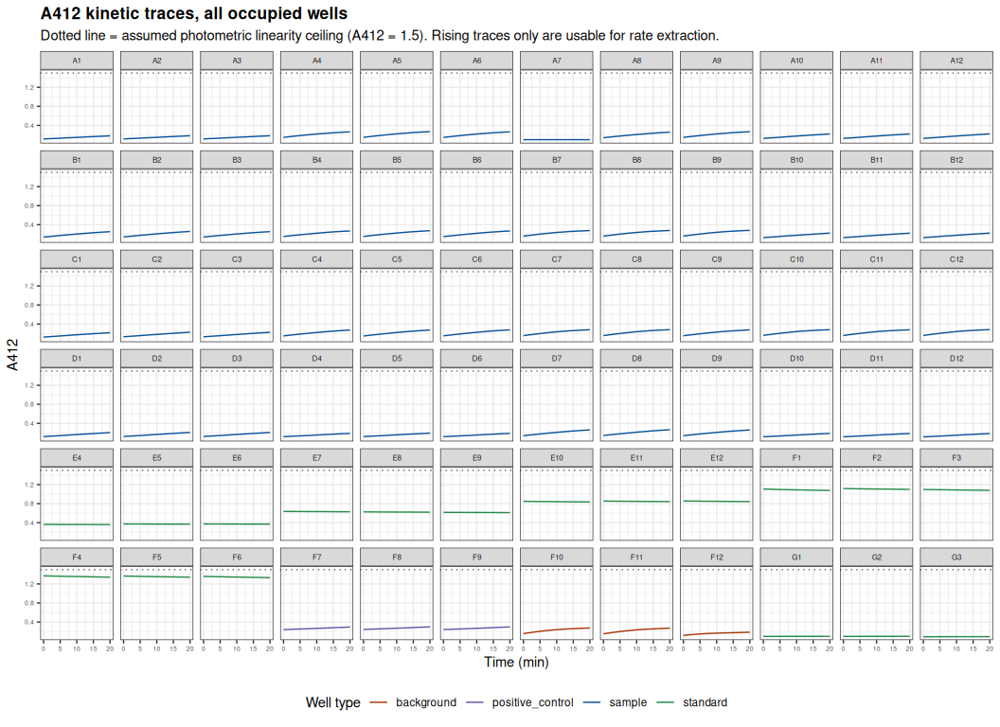
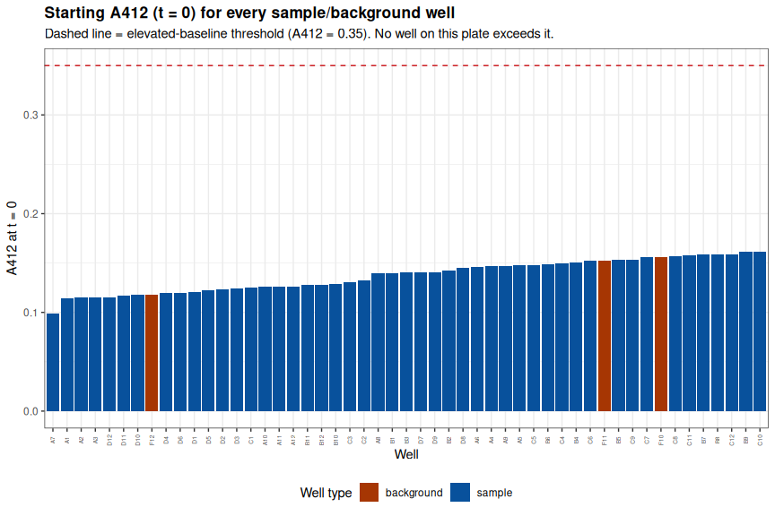
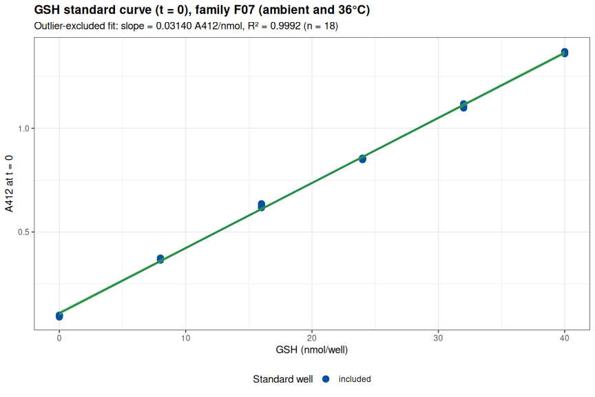
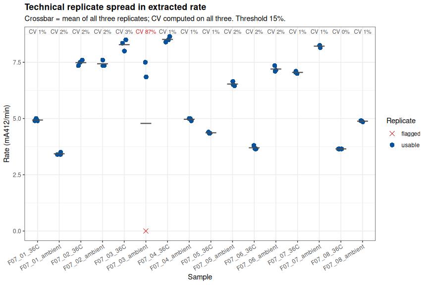
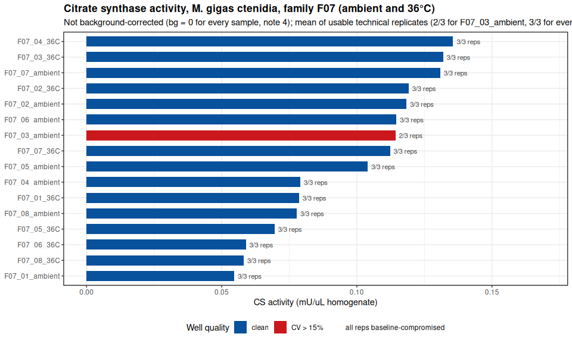
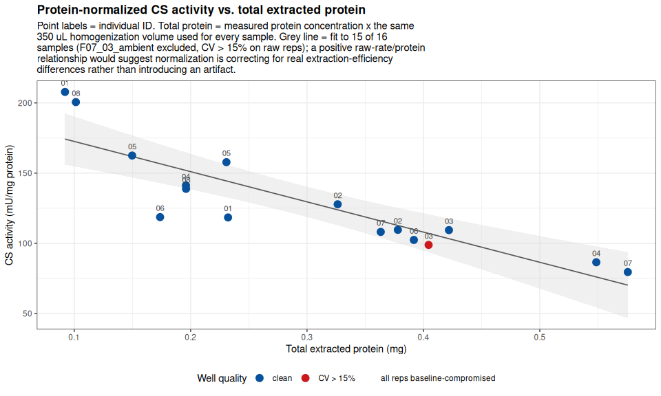

INTRO
Citrate synthase activity in ctenidia of sixteen Magallana gigas (Pacific oyster) individuals from Family 7 — eight held at ambient temperature and eight at 36°C — assayed together on a single plate using the Citrate Synthase Assay Kit (ABCAM; cat: ab239712). Combining both temperature exposures on one plate removes the between-plate variability that complicates the Family 5 ambient-vs-36°C comparison, where the two exposures were run on separate plates with different read durations. Samples had been previously homogenized on 20260811 (Notebook entry), and protein concentrations for normalization were determined on 20260813 (Notebook entry).
The background control on this plate failed — the reported rates are raw, uncorrected rates.
Reaction Mix (containing CS Substrate) appears to have been added to all three pooled-background wells (F10-F12) instead of Background Control Mix. All three replicates rise substantially over the run (net change 0.067-0.119 A412, vs. <0.05 for a flat background well) rather than staying flat, and this has been confirmed as a pipetting mix-up rather than genuine background signal.
Because 0 of 3 replicates are flat, no background rate can be estimated, and per the pipeline’s existing fallback the background correction applied to every sample on this plate is 0 — i.e. corrected rate = raw rate throughout.
Where a pooled background control has worked correctly, it has been a small term (roughly 2-7% of the sample signal), so the values here are likely only a modest overestimate of true background-corrected activity — but that cannot be confirmed without a working background control. These rates should not be pooled directly with background-corrected values from other assays without accounting for the difference. Re-running just the background triplicate would let this plate’s existing sample, standard-curve, and positive-control data be corrected without re-collecting everything else.
To reduce the risk of this recurring: physically separate the Reaction Mix and Background Control Mix reservoirs/tips, or pipette the background wells first, before switching reagents for the sample wells.
All data/code/analysis is available here:
MATERIALS & METHODS
Citrate Synthase Assay
The Citrate Synthase Assay Kit (ABCAM; cat: ab239712) was used according to the manufacturer’s instructions (ABCAM-Citrate-Synthase-Assay-v4a-ab239712.pdf (GitHub; PDF)). The kit is a coupled kinetic assay: citrate synthase condenses acetyl-CoA and oxaloacetate to release free CoA-SH, the liberated thiol reduces DTNB to TNB2-, and the rate of absorbance increase at 412 nm is proportional to citrate synthase activity. Absolute nmol of thiol are assigned from a reduced glutathione (GSH) standard curve read on the same plate.
Per reaction well, 2 µL of undiluted homogenate was combined with 48 µL of Assay Buffer 7, followed by 50 µL of Reaction Mix. All sixteen samples — eight ambient and eight 36°C — were assayed in technical triplicate on a single clear, flat-bottomed 96-well plate. A six-point GSH standard curve (0, 8, 16, 24, 32, 40 nmol/well) and a CS positive control were included in triplicate on the same plate.
REACTION MIX
| REAGENT | SINGLE_RXN_VOLUME (uL) | REACTIONS | TOTAL_VOLUME (uL) |
|---|---|---|---|
| Assay Buffer 7 | 43 | 77 | 3311 |
| DTNB | 5 | 77 | 385 |
| CS Substrate | 2 | 77 | 154 |
BACKGROUND MIX
| REAGENT | SINGLE_RXN_VOLUME (uL) | REACTIONS | TOTAL_VOLUME (uL) |
|---|---|---|---|
| Assay Buffer 7 | 45 | 4 | 180 |
| DTNB | 5 | 4 | 20 |
Absorbance was read at 412 nm in kinetic mode at 25°C on a Synergy HTX plate reader (Agilent), every 2 minutes for 20 minutes (11 reads).
Normalization
Activity was normalized to total extracted protein rather than tissue weight. Tissue was homogenized in 350 µL of Assay Buffer 7, and protein concentration in each homogenate was quantified on 20260813 (Notebook entry) using the Bradford assay. Total protein mass per sample is that concentration multiplied by the 350 µL homogenization volume. Tissue weights are recorded in the plate layout labels for provenance only and play no role in the activity calculation. Protein values come from two assays run on 20260813: the F07 plate (12 of the 16 samples) and a follow-up re-assay plate (F07_05_36C, F07_01_ambient, F07_04_ambient, F07_06_ambient, re-assayed at dilution after failing QC on the first pass).
Analysis
Data were analyzed in R. The Rmd file is here (GitHub):
Knitted markdown is below.
Background correction was intended to use a single pooled background control rather than a paired per-sample background. A pool was made from 5 µL of each sample homogenate, and 2 µL of that pool (matching the 2 µL sample volume used for every reaction well) was run in triplicate with Background Control Mix (no CS Substrate Mix), producing wells BG-citrate_synthase (F10-F12). As described in the callout above, Reaction Mix was added to these wells instead, so no background correction could be applied.
Data files
Plate reader files
Plate reader files (*.xpt) are available here (require Gen5 software to open):
- https://github.com/RobertsLab/sormi-assay-development/tree/main/Citrate_synthase/data/plate_reader_files
Raw absorbance data
Raw absorbance data (*.csv), plate layouts, and Gen5 full reports are available here:
- https://github.com/RobertsLab/sormi-assay-development/tree/main/Citrate_synthase/data/raw_absorbance
RESULTS
Apart from the background control, the plate ran well. The positive control was clean (2.6% CV, R2 0.998-1.000) and the GSH standard curve has zero flagged outlier wells (R2 = 0.9992), so calibration uncertainty is low. Fifteen of sixteen samples are fully clean, with every non-failing sample under 3.1% CV on all three raw replicates and most under 2%.
The one failure is A7 (F07_03_ambient), a dead well reading a constant A412 of 0.099 across all 11 timepoints (net change = 0, R2 = 0) rather than a slow reaction. Its two siblings are normal, so F07_03_ambient’s activity is computed from 2 of 3 replicates with a 6.4% usable-replicate CV. Its CV flag column still reads FAIL >15% because that column is deliberately computed on all raw replicates including the dead well — the two figures report different things and both are correct.
Within this plate, raw activity spans 0.0547-0.1356 mU/µL, a real 2.5-fold range against <6.5% technical CV per sample. Protein normalization looks appropriate rather than artifactual: raw rate correlates strongly and significantly with total extracted protein (r = +0.93, p = 0.0000), so mU/mg protein is the recommended basis for downstream comparison.
| Sample | Reps used | CV all reps (%) | CV used reps (%) | Rate (mA412/min) | Activity (mU/uL) | Activity (mU/mg protein) | CV flag |
|---|---|---|---|---|---|---|---|
| F07_01_ambient | 3/3 | 1.7 | 1.7 | 3.43 | 0.0547 | 207.819 | pass |
| F07_02_ambient | 3/3 | 1.9 | 1.9 | 7.43 | 0.1184 | 109.600 | pass |
| F07_03_ambient | 2/3 | 86.9 | 6.4 | 7.18 | 0.1143 | 98.879 | FAIL >15% |
| F07_04_ambient | 3/3 | 1.2 | 1.2 | 4.97 | 0.0791 | 141.243 | pass |
| F07_05_ambient | 3/3 | 1.6 | 1.6 | 6.53 | 0.1040 | 157.813 | pass |
| F07_06_ambient | 3/3 | 1.8 | 1.8 | 7.20 | 0.1147 | 102.432 | pass |
| F07_07_ambient | 3/3 | 0.7 | 0.7 | 8.22 | 0.1309 | 79.566 | pass |
| F07_08_ambient | 3/3 | 0.6 | 0.6 | 4.88 | 0.0778 | 138.824 | pass |
| F07_01_36C | 3/3 | 1.2 | 1.2 | 4.93 | 0.0786 | 118.446 | pass |
| F07_02_36C | 3/3 | 1.7 | 1.7 | 7.48 | 0.1192 | 127.815 | pass |
| F07_03_36C | 3/3 | 3.1 | 3.1 | 8.28 | 0.1319 | 109.428 | pass |
| F07_04_36C | 3/3 | 1.5 | 1.5 | 8.52 | 0.1356 | 86.544 | pass |
| F07_05_36C | 3/3 | 0.7 | 0.7 | 4.37 | 0.0695 | 162.517 | pass |
| F07_06_36C | 3/3 | 2.3 | 2.3 | 3.70 | 0.0589 | 118.679 | pass |
| F07_07_36C | 3/3 | 0.7 | 0.7 | 7.05 | 0.1123 | 108.153 | pass |
| F07_08_36C | 3/3 | 0.0 | 0.0 | 3.65 | 0.0581 | 200.578 | pass |
All sixteen samples are classified usable. Since both exposures share one plate, one standard curve, and one positive control, the ambient-vs-36°C contrast within Family 7 is not confounded by between-plate differences — though the failed background control means the comparison rests on raw rates.
1 BACKGROUND
Citrate synthase (CS) activity in ctenidia of sixteen Magallana gigas (Pacific oyster) individuals from family F07 – eight held at ambient temperature and eight at 36 °C – assayed together on a single plate 2026-08-24 with the Abcam Citrate Synthase Assay Kit (ab239712), v4a. Both temperature exposures for F07 are combined on this one plate. This plate also has a confirmed reagent mix-up affecting its background control (note 4) – background-corrected rates on this plate equal the raw rates.
The kit is a coupled kinetic assay. CS condenses acetyl-CoA and oxaloacetate, releasing free CoA-SH; the liberated thiol reduces DTNB to TNB2-, which absorbs at 412 nm. The rate of A412 increase is proportional to CS activity, and absolute nmol of thiol are assigned from a GSH (reduced glutathione) standard curve read on the same plate.
Absorbance was read at 412 nm in kinetic mode, 25 °C, every 2 min for 20 min (11 reads) on a Synergy HTX. See note 1.
Total extracted protein per homogenate (used for normalization, note 2) was not measured on this plate; it comes from two BCA/Bradford-style protein-quantification assays run 2026-08-13: Gen5-20260813-mgig-sormi-BSA-F07-protein.Rmd (12 of the 16 samples) and a follow-up re-assay plate (the remaining 4 – F07_05_36C, F07_01_ambient, F07_04_ambient, F07_06_ambient – which were re-assayed at dilution after failing QC on the first pass). Homogenization used 350 µL of Assay Buffer 7 per sample (reported by the bench operator; see the lab notebook homogenization post for this assay).
This document is fully self-contained: layout parsing, kinetic QC, standard-curve fitting, rate extraction, CV computation, protein normalization, and results assembly are all defined directly below (see ## Pipeline functions under SETUP) rather than sourced from a separate script, so the whole analysis can be reproduced from this one file.
1.1 Sample naming convention
Well labels follow <family>_<individual>_<temperature>-<assay_type>-<weight>-df.<n> for sample wells (e.g. F07_01_ambient-citrate_synthase-7.3-df.0, F07_01_36C-citrate_synthase-9.0-df.0), STD-<assay_type>-<nmol_per_well> for GSH standards, POS-<assay_type> for the positive control, and BG-<assay_type> for the pooled background control (see note 3) – the background label carries no weight or dilution suffix, since it is not tied to any single individual’s tissue. Because both temperature exposures are present on this one plate, <temperature> genuinely varies (ambient or 36C) within this document; nothing in the parsing below hardcodes a temperature. The trailing number in the sample label (e.g. 7.3) is tissue weight in mg, which is not used for normalization here (note 2); it is parsed and validated but plays no role in the activity calculation.
1.2 Notes
- Read duration for this plate is 20 minutes (11 reads at 2-min intervals). The assay parameters below set
read_duration_min = 20to match. Rate extraction uses a fixed-width sliding window (rate_window_n = 5points = 8 min) rather than the full trace; see the KINETIC TRACES section for whether the assay is still in its linear phase over this window. - Activity is normalized to total extracted protein, not tissue weight, because protein concentration was measured directly (BCA-style assay), and controls for extraction efficiency in a way tissue weight cannot. No
Samplestring in either protein-concentration source needed correction for this plate’s samples. - Background correction uses a single pooled background control, rather than a paired per-sample background for each individual. A pool was made from 5 µL of each sample homogenate, and 2 µL of that pool (matching
sample_volume_uLused for every reaction well) was run in triplicate with Background Control Mix (no CS Substrate Mix) to produce wellsBG-citrate_synthase(F10-F12). Because there is only one background estimate for the whole plate, the same background-corrected rate would normally be subtracted from every sample – but see note 4. - Reaction Mix (containing CS Substrate) appears to have been added to all three pooled-background wells on this plate instead of Background Control Mix. All three
BG-citrate_synthasereplicates rise substantially over the run (net change 0.067-0.119 A412, vs. <0.05 for a flat background well) rather than staying flat, and this has been confirmed as a pipetting mix-up rather than genuine background signal. Because 0 of 3 replicates are flat,compute_background_correction()cannot estimate a background rate (bg_rate_flatisNA) and, per its existing fallback, the background correction used for every sample on this plate is 0 – i.e., corrected rate = raw rate throughout. See BACKGROUND CORRECTION and the SUMMARY for what this means for this plate’s results.
library(knitr)
library(ggplot2)
library(dplyr)##
## Attaching package: 'dplyr'
## The following objects are masked from 'package:stats':
##
## filter, lag
## The following objects are masked from 'package:base':
##
## intersect, setdiff, setequal, unionlibrary(tidyr)
knitr::opts_chunk$set(
echo = TRUE, # Display code chunks
eval = TRUE, # Evaluate code chunks
warning = FALSE, # Hide warnings
message = FALSE, # Hide messages
comment = "", # Prevents appending '##' to beginning of lines in code output
results = 'hold' # Holds output so it's all printed together after code chunk
)1.3 Pipeline functions
All layout parsing, kinetic QC, standard-curve fitting, rate extraction, CV computation, protein normalization, and results assembly are defined directly in this document (rather than sourced from a separate script) so that it is fully self-contained and reproducible from this single file. The functions are grouped below by pipeline stage; each is called in the DATA / KINETIC TRACES / ANOMALY DETECTION / GSH STANDARD CURVE / RATE EXTRACTION / BACKGROUND CORRECTION / TECHNICAL REPLICATE PRECISION / CITRATE SYNTHASE ACTIVITY / QC SUMMARY sections that follow. Nothing plate-specific (typo fixes, disqualified samples, thresholds) is hardcoded in any function – it is always passed in as an argument, from the assay_params list defined further below or from a plate-specific fix list.
1.3.1 Data import and layout parsing
Reads the raw Gen5 exports (kinetic absorbance CSV, full-report text backup, plate-layout CSV), reconciles them against each other, and attaches well-type/sample-id/replicate metadata plus measured protein concentrations to every well.
## -----------------------------------------------------------------------
## elapsed_to_min()
## Purpose : Convert Gen5 "H:MM:SS" elapsed-time strings to decimal minutes.
## Inputs : x - character vector of "H:MM:SS" strings
## Outputs : numeric vector of elapsed minutes, same length as x
## -----------------------------------------------------------------------
elapsed_to_min <- function(x) {
vapply(strsplit(x, ":"), function(p) {
p <- as.numeric(p)
p[1] * 60 + p[2] + p[3] / 60
}, numeric(1))
}
## -----------------------------------------------------------------------
## read_absorbance_csv()
## Purpose : Parse a Gen5 "absorbance-*.csv" kinetic export: wavelength
## header, a "Time," row, a temperature row, then one row per well
## (well ID in column 1, one OD reading per timepoint thereafter).
## Inputs : path - path to the absorbance-*.csv file
## Outputs : long-format data.frame, one row per well x timepoint:
## well (chr), time_min (dbl), od (dbl)
## -----------------------------------------------------------------------
read_absorbance_csv <- function(path) {
ln <- iconv(readLines(path, warn = FALSE, encoding = "latin1"), "latin1", "UTF-8")
time_i <- grep("^Time,", ln)[1]
time_str <- strsplit(ln[time_i], ",")[[1]]
time_str <- time_str[!time_str %in% c("", "Time")]
tmin <- elapsed_to_min(time_str)
well_ln <- ln[grepl("^[A-H][0-9]{1,2},", ln)]
bind_rows(lapply(strsplit(well_ln, ","), function(p) {
data.frame(well = p[1], time_min = tmin,
od = as.numeric(p[seq_along(tmin) + 1]),
stringsAsFactors = FALSE)
}))
}
## -----------------------------------------------------------------------
## read_full_report()
## Purpose : Parse a Gen5 "full_report-*.txt" export: tab-delimited, wells
## across columns, timepoints down rows. Used only as an
## independent cross-check against the absorbance CSV, never as a
## primary data source.
## Inputs : path - path to the full_report-*.txt file
## Outputs : long-format data.frame, one row per well x timepoint:
## well (chr), time_min (dbl), od (dbl)
## -----------------------------------------------------------------------
read_full_report <- function(path) {
ln <- iconv(readLines(path, warn = FALSE, encoding = "latin1"), "latin1", "UTF-8")
hdr_i <- grep("^Time\t.*\tA1\t", ln)[1]
hdr <- trimws(strsplit(ln[hdr_i], "\t")[[1]])
rows <- ln[grepl("^[0-9]:[0-9]{2}:[0-9]{2}\t", ln)]
m <- do.call(rbind, strsplit(rows, "\t"))
tmin <- elapsed_to_min(m[, 1])
well_cols <- which(grepl("^[A-H][0-9]{1,2}$", hdr))
bind_rows(lapply(well_cols, function(j) {
data.frame(well = hdr[j], time_min = tmin,
od = as.numeric(m[, j]), stringsAsFactors = FALSE)
}))
}
## -----------------------------------------------------------------------
## parse_plate_layout()
## Purpose : Convert a raw Gen5 plate-layout CSV export into one row per
## occupied well with its descriptive label. Auto-detects two
## export formats seen in practice:
## "single" - one row per plate row (row 1 = column numbers,
## column 1 = row letter, last column = "Name" tag);
## each cell already holds the full descriptive label.
## "double" - each plate row is exported as TWO rows: a
## "Well ID" row (SPL codes) immediately followed by
## a "Name" row (the descriptive label actually used
## downstream).
## The format is detected from column 1: if a value repeats twice
## in a row (once for the well-ID row, once for the label row)
## immediately below a numeric header, it is treated as "double".
## Inputs : path - path to the layout-*.csv file
## Outputs : data.frame, one row per occupied well:
## well (chr, e.g. "A1"), plate_row (chr), plate_col (int),
## label (chr, trimmed descriptive label)
## -----------------------------------------------------------------------
parse_plate_layout <- function(path) {
plate_layout <- read.csv(path, header = FALSE, stringsAsFactors = FALSE)
col1 <- trimws(plate_layout$V1)
# "double" format: row letters appear twice in a row in column 1
# (once tagging the Well-ID row, once tagging the Name row), e.g.
# "A", "A", "B", "B", ... Detect by checking whether non-empty,
# non-header values in col1 are each immediately followed by a repeat.
data_rows <- which(col1 != "" & !is.na(col1))[-1] # drop header row (row 1)
is_double <- length(data_rows) >= 2 &&
all(col1[data_rows[c(TRUE, FALSE)]] == col1[data_rows[c(FALSE, TRUE)]][seq_len(floor(length(data_rows) / 2))])
if (is_double) {
# Pair each row-letter row with the following label row.
row_letter_rows <- data_rows[c(TRUE, FALSE)]
label_rows <- data_rows[c(FALSE, TRUE)]
stopifnot(length(row_letter_rows) == length(label_rows))
out <- expand.grid(pair_idx = seq_along(row_letter_rows),
col_idx = 2:(ncol(plate_layout) - 1)) %>%
mutate(
plate_row = col1[row_letter_rows[pair_idx]],
plate_col = as.integer(plate_layout[1, col_idx]),
well = paste0(plate_row, plate_col),
label = trimws(mapply(function(i, j) plate_layout[i, j],
label_rows[pair_idx], col_idx))
) %>%
filter(label != "") %>%
select(well, plate_row, plate_col, label) %>%
arrange(plate_row, plate_col)
} else {
# "single" format: row 1 = column numbers, column 1 = row letters,
# last column = "Name" tag; each cell already holds the full label.
out <- expand.grid(row_idx = 2:nrow(plate_layout),
col_idx = 2:(ncol(plate_layout) - 1)) %>%
mutate(
plate_row = plate_layout$V1[row_idx],
plate_col = as.integer(plate_layout[1, col_idx]),
well = paste0(plate_row, plate_col),
label = trimws(mapply(function(i, j) plate_layout[i, j], row_idx, col_idx))
) %>%
filter(label != "") %>%
select(well, plate_row, plate_col, label) %>%
arrange(plate_row, plate_col)
}
attr(out, "layout_format") <- ifelse(is_double, "double", "single")
out
}
## -----------------------------------------------------------------------
## reconcile_kinetic_sources()
## Purpose : Cross-check the absorbance CSV (primary data source) against
## the full_report text export (independent instrument export)
## and the plate layout (expected well set). Fails loudly
## (stopifnot) if any layout well is missing from the CSV, or if
## the two kinetic sources disagree on any shared reading.
## Inputs : absorbance_csv - long-format data.frame from read_absorbance_csv()
## full_report - long-format data.frame from read_full_report()
## layout_wells - data.frame from parse_plate_layout()
## tolerance - max allowed |CSV - report| absolute difference
## (default 1e-9, i.e. exact agreement)
## Outputs : list(plate_readings, overlap_check, summary), where
## plate_readings = absorbance_csv with a `source` column added,
## summary = named list of counts for reporting
## -----------------------------------------------------------------------
reconcile_kinetic_sources <- function(absorbance_csv, full_report, layout_wells,
tolerance = 1e-9) {
wells_csv <- unique(absorbance_csv$well)
wells_report <- unique(full_report$well)
wells_report_not_csv <- setdiff(wells_report, wells_csv)
wells_layout_not_csv <- setdiff(layout_wells$well, wells_csv)
wells_csv_not_layout <- setdiff(wells_csv, layout_wells$well)
overlap_check <- inner_join(absorbance_csv, full_report,
by = c("well", "time_min"), suffix = c("_csv", "_report")) %>%
mutate(abs_diff = abs(od_csv - od_report))
max_disagreement <- if (nrow(overlap_check) > 0) max(overlap_check$abs_diff) else NA_real_
stopifnot(
length(wells_layout_not_csv) == 0,
is.na(max_disagreement) || max_disagreement < tolerance
)
plate_readings <- absorbance_csv %>% mutate(source = "absorbance_csv")
list(
plate_readings = plate_readings,
overlap_check = overlap_check,
summary = list(
n_wells_csv = length(wells_csv),
n_wells_report = length(wells_report),
n_wells_report_not_csv = length(wells_report_not_csv),
n_wells_layout_not_csv = length(wells_layout_not_csv),
n_wells_csv_not_layout = length(wells_csv_not_layout),
n_shared_readings = nrow(overlap_check),
max_disagreement = max_disagreement
)
)
}
## -----------------------------------------------------------------------
## annotate_wells()
## Purpose : Join layout labels onto the kinetic readings and parse each
## label into well_type, sample_id, family, individual,
## temperature, tissue weight, and standard concentration.
## Expected label grammar:
## sample : <family>_<individual>_<temperature>-<assay_type>-<weight>-df.<n>
## standard : STD-<assay_type>-<nmol_per_well>
## positive control : POS-<assay_type>
## background (pooled) : BG-<assay_type>
## Unlike the paired per-sample background design used on earlier
## plates (`_BG` appended to a sample's own label), this plate's
## background wells are a single pooled control with no sample_id,
## family, individual, or weight of their own (note 3) -- so
## sample_id/family/individual/temperature/weight_mg parsing is
## restricted to well_type == "sample" only.
## Label typos (e.g. a misspelled assay_type) are corrected before
## parsing via `label_fixes`, a named character vector of
## c(pattern = replacement) pairs applied in order with gsub().
## Inputs : plate_readings - data.frame from reconcile_kinetic_sources()$plate_readings
## layout_wells - data.frame from parse_plate_layout()
## label_fixes - optional named character vector, e.g.
## c("citrate_synthasse" = "citrate_synthase")
## Outputs : plate_long - fully annotated long-format data.frame, one row
## per well x timepoint, with well_type, sample_id, family,
## individual, temperature, weight_mg, std_nmol columns added
## -----------------------------------------------------------------------
annotate_wells <- function(plate_readings, layout_wells, label_fixes = NULL) {
plate_long <- plate_readings %>%
left_join(layout_wells, by = "well") %>%
mutate(
well_type = case_when(
grepl("^STD-", label) ~ "standard",
grepl("^POS-", label) ~ "positive_control",
grepl("^BG-", label) ~ "background",
TRUE ~ "sample"
),
label_clean = label
)
if (!is.null(label_fixes)) {
for (pat in names(label_fixes)) {
plate_long$label_clean <- gsub(pat, label_fixes[[pat]], plate_long$label_clean)
}
}
plate_long <- plate_long %>%
mutate(
sample_id = ifelse(well_type == "sample",
sub("-[a-zA-Z_]+-.*$", "", label_clean), NA_character_),
family = ifelse(!is.na(sample_id), sub("^(F[0-9]+)_.*$", "\\1", sample_id), NA_character_),
individual = ifelse(!is.na(sample_id), sub("^F[0-9]+_([0-9]+)_.*$", "\\1", sample_id), NA_character_),
temperature = ifelse(!is.na(sample_id), sub("^F[0-9]+_[0-9]+_(.*)$", "\\1", sample_id), NA_character_),
weight_mg = ifelse(well_type == "sample",
as.numeric(sub("^.*-[a-zA-Z_]+-([0-9.]+)-df\\..*$", "\\1", label_clean)),
NA_real_),
std_nmol = ifelse(well_type == "standard",
as.numeric(sub("^STD-[a-zA-Z_]+-", "", label_clean)), NA_real_)
) %>%
arrange(well_type, sample_id, well, time_min)
# Fail loudly rather than silently dropping malformed labels
stopifnot(
!any(is.na(plate_long$well_type)),
!any(is.na(plate_long$weight_mg[plate_long$well_type == "sample"])),
!any(is.na(plate_long$std_nmol[plate_long$well_type == "standard"]))
)
plate_long
}
## -----------------------------------------------------------------------
## load_protein_concentrations()
## Purpose : Load one or more BCA/Bradford-style protein-concentration CSV
## exports, concatenate them, and match each plate sample to
## exactly one protein-concentration record. Fails loudly if any
## plate sample has zero or more than one match. Converts
## concentration (ug/mL) to total protein mass (mg) in the full
## homogenate using the measured homogenization volume.
## Inputs : protein_files - character vector of CSV paths, each with
## columns `Sample` and
## `Calculated concentration (ug/mL)`
## plate_sample_ids - character vector of this plate's sample IDs
## homogenate_volume_uL - measured homogenization volume (uL),
## applied identically to every sample
## sample_id_fixes - optional named character vector of
## c(pattern = replacement) label-typo
## corrections applied to the protein
## file's Sample column before matching
## Outputs : data.frame, one row per plate sample:
## sample_id, source_file, conc_ug_mL, total_protein_mg
## -----------------------------------------------------------------------
load_protein_concentrations <- function(protein_files, plate_sample_ids,
homogenate_volume_uL,
sample_id_fixes = NULL) {
protein_all <- protein_files %>%
purrr::map_dfr(~ read.csv(.x, check.names = FALSE) %>%
mutate(source_file = basename(.x))) %>%
rename(sample_id_protein = Sample, conc_ug_mL = `Calculated concentration (ug/mL)`) %>%
select(sample_id_protein, source_file, conc_ug_mL)
if (!is.null(sample_id_fixes)) {
for (pat in names(sample_id_fixes)) {
protein_all$sample_id_protein <- gsub(pat, sample_id_fixes[[pat]],
protein_all$sample_id_protein)
}
}
protein_matches <- protein_all %>% filter(sample_id_protein %in% plate_sample_ids)
match_counts <- protein_matches %>% count(sample_id_protein, name = "n_matches")
stopifnot(
all(plate_sample_ids %in% protein_matches$sample_id_protein),
all(match_counts$n_matches == 1)
)
protein_matches %>%
rename(sample_id = sample_id_protein) %>%
mutate(total_protein_mg = conc_ug_mL * homogenate_volume_uL / 1e6) %>%
arrange(sample_id)
}1.3.2 Well-level kinetic QC
Flags read glitches, non-rising (‘decreasing’) traces, elevated t0 baselines, and other well-level anomalies before any rate is trusted.
## -----------------------------------------------------------------------
## local_step_excess()
## Purpose : For a kinetic trace, measure how much each read-to-read step
## departs from the AVERAGE of its two immediate neighbouring
## steps. A large local excess flags a read glitch; comparing to
## local neighbours (rather than the trace's overall median step)
## tolerates traces that smoothly decelerate throughout.
## Inputs : od - numeric vector of OD readings in time order
## Outputs : numeric vector of length length(od) - 1 (one per step)
## -----------------------------------------------------------------------
local_step_excess <- function(od) {
d <- diff(od)
n <- length(d)
local_expect <- vapply(seq_len(n), function(i) {
mean(d[intersect(c(i - 1L, i + 1L), seq_len(n))])
}, numeric(1))
d - local_expect
}
## -----------------------------------------------------------------------
## compute_well_diagnostics()
## Purpose : Compute four independent per-well trace-shape diagnostics from
## the raw kinetic trace, before any rate fitting: direction
## (net change), monotonicity (fraction of rising steps),
## over-range (any read above the photometric linearity ceiling),
## and discontinuity (a read-to-read glitch via local_step_excess).
## Also flags an elevated starting absorbance for sample wells,
## and background wells that behave like active reactions.
## Inputs : plate_long - data.frame from annotate_wells()
## assay_params - list with od_linear_max, glitch_excess_od,
## sample_baseline_od, bg_flat_od_max,
## bg_flat_drift_max
## Outputs : well_diagnostics - one row per well, with od_first, od_last,
## od_max, net_change, frac_rising, max_step, typical_step,
## step_excess, glitch_at_min, and flag_* / n_flags columns
## -----------------------------------------------------------------------
compute_well_diagnostics <- function(plate_long, assay_params) {
plate_long %>%
arrange(well, time_min) %>%
group_by(well, plate_row, plate_col, well_type, sample_id, label, std_nmol, source) %>%
summarise(
od_first = first(od),
od_last = last(od),
od_max = max(od),
net_change = last(od) - first(od),
frac_rising = mean(diff(od) > 0),
max_step = diff(od)[which.max(abs(diff(od)))],
typical_step = median(abs(diff(od))),
step_excess = local_step_excess(od)[which.max(abs(local_step_excess(od)))],
glitch_at_min = time_min[which.max(abs(local_step_excess(od))) + 1L],
.groups = "drop"
) %>%
mutate(
step_ratio = abs(max_step) / pmax(typical_step, 0.001),
flag_decreasing = net_change <= 0,
flag_over_range = od_max > assay_params$od_linear_max,
flag_glitch = abs(step_excess) > assay_params$glitch_excess_od,
flag_high_baseline = well_type == "sample" & od_first > assay_params$sample_baseline_od,
flag_bg_active = well_type == "background" &
(od_first > assay_params$bg_flat_od_max |
abs(net_change) > assay_params$bg_flat_drift_max),
n_flags = flag_decreasing + flag_over_range + flag_glitch +
flag_bg_active + flag_high_baseline
)
}
## -----------------------------------------------------------------------
## compute_baseline_diagnostics()
## Purpose : Classify sample/background wells by starting absorbance
## (elevated vs. normal) and summarize, per sample, how many of
## its replicates are baseline-compromised. A sample with all
## replicates elevated has no clean replicate at all.
## Inputs : well_diagnostics - data.frame from compute_well_diagnostics()
## assay_params - list with sample_baseline_od
## Outputs : list(baseline_check, baseline_per_sample)
## -----------------------------------------------------------------------
compute_baseline_diagnostics <- function(well_diagnostics, assay_params) {
baseline_check <- well_diagnostics %>%
filter(well_type %in% c("sample", "background")) %>%
mutate(baseline = ifelse(od_first > assay_params$sample_baseline_od,
"elevated", "normal")) %>%
arrange(desc(od_first))
baseline_per_sample <- baseline_check %>%
filter(well_type == "sample") %>%
group_by(sample_id) %>%
summarise(n_elevated = sum(baseline == "elevated"), n = n(),
median_baseline = median(od_first), .groups = "drop") %>%
arrange(desc(n_elevated))
list(baseline_check = baseline_check, baseline_per_sample = baseline_per_sample)
}1.3.3 Standard curve and rate extraction
Fits the GSH standard curve, extracts each well’s rate via a sliding-window linear regression gated on R-squared, and summarizes the positive control.
## -----------------------------------------------------------------------
## fit_standard_curve()
## Purpose : Extract t=0 GSH standard readings, quantify signal drift over
## the run, compute per-concentration replicate statistics, flag
## outlier wells by deviation from their triplicate median, and
## fit three candidate calibration lines (all wells, per-
## concentration means, outlier-excluded). The outlier-excluded
## fit is the calibration used downstream.
## Inputs : plate_long - data.frame from annotate_wells()
## assay_params - list with std_outlier_od
## Outputs : list with standards_t0, standard_drift, standard_summary,
## standards_flagged, fit_all_wells, fit_means, fit_no_outliers,
## fit_comparison, std_slope, std_intercept, std_r2, std_nmol_max
## -----------------------------------------------------------------------
fit_standard_curve <- function(plate_long, assay_params) {
standards_all <- plate_long %>%
filter(well_type == "standard") %>%
select(well, std_nmol, time_min, od, source)
standards_t0 <- standards_all %>%
filter(time_min == 0) %>%
select(well, std_nmol, od, source) %>%
arrange(std_nmol, well)
standard_drift <- standards_all %>%
group_by(well, std_nmol) %>%
summarise(od_t0 = od[time_min == 0], od_t40 = od[time_min == max(time_min)],
drift = od_t40 - od_t0, .groups = "drop") %>%
arrange(std_nmol, well)
standard_summary <- standards_t0 %>%
group_by(std_nmol) %>%
summarise(n = n(), mean_od = mean(od), sd_od = sd(od),
se_od = sd(od) / sqrt(n()), cv_pct = 100 * sd(od) / mean(od),
median_od = median(od), .groups = "drop") %>%
arrange(std_nmol) %>%
mutate(net_od = mean_od - mean_od[std_nmol == 0],
od_per_nmol = ifelse(std_nmol > 0, net_od / std_nmol, NA_real_))
standards_flagged <- standards_t0 %>%
group_by(std_nmol) %>%
mutate(triplicate_median = median(od),
deviation = od - triplicate_median,
is_outlier = abs(deviation) > assay_params$std_outlier_od) %>%
ungroup() %>%
arrange(desc(abs(deviation)))
fit_all_wells <- lm(od ~ std_nmol, data = standards_flagged)
fit_means <- lm(mean_od ~ std_nmol, data = standard_summary)
fit_no_outliers <- lm(od ~ std_nmol, data = standards_flagged %>% filter(!is_outlier))
fit_comparison <- bind_rows(
data.frame(fit = "all wells", n = nobs(fit_all_wells),
slope = coef(fit_all_wells)[2], intercept = coef(fit_all_wells)[1],
r_squared = summary(fit_all_wells)$r.squared),
data.frame(fit = "concentration means", n = nobs(fit_means),
slope = coef(fit_means)[2], intercept = coef(fit_means)[1],
r_squared = summary(fit_means)$r.squared),
data.frame(fit = "outlier-excluded", n = nobs(fit_no_outliers),
slope = coef(fit_no_outliers)[2], intercept = coef(fit_no_outliers)[1],
r_squared = summary(fit_no_outliers)$r.squared)
)
list(
standards_all = standards_all,
standards_t0 = standards_t0,
standard_drift = standard_drift,
standard_summary = standard_summary,
standards_flagged = standards_flagged,
fit_all_wells = fit_all_wells,
fit_means = fit_means,
fit_no_outliers = fit_no_outliers,
fit_comparison = fit_comparison,
std_slope = unname(coef(fit_no_outliers)[2]),
std_intercept = unname(coef(fit_no_outliers)[1]),
std_r2 = summary(fit_no_outliers)$r.squared,
std_nmol_max = max(standard_summary$std_nmol)
)
}
## -----------------------------------------------------------------------
## window_slopes()
## Purpose : Fit every sliding window of `w` consecutive timepoints on one
## kinetic trace and return the slope (mOD/min) and R^2 of each.
## Inputs : t - numeric vector of timepoints (min)
## y - numeric vector of OD readings, same length as t
## w - window width in number of points
## Outputs : data.frame, one row per window: t_start, t_end,
## slope_mOD_min, r2
## -----------------------------------------------------------------------
window_slopes <- function(t, y, w) {
n <- length(y)
bind_rows(lapply(seq_len(n - w + 1), function(s) {
i <- s:(s + w - 1)
f <- lm(y[i] ~ t[i])
r2 <- summary(f)$r.squared
data.frame(t_start = t[i[1]], t_end = t[i[w]],
slope_mOD_min = unname(coef(f)[2]) * 1000,
r2 = ifelse(is.na(r2), 0, r2))
}))
}
## -----------------------------------------------------------------------
## compute_well_rates()
## Purpose : For every well, scan all sliding windows of assay_params$
## rate_window_n consecutive reads and record the max-increasing
## window (used for activity) and the max-absolute window
## (diagnostic only -- matches Gen5's own `Max V` convention,
## which can report large negative "rates" for degrading wells).
## A rate is `rate_usable` only if its R^2 clears the floor, the
## well's net change is positive, and no read glitch falls inside
## the fitted window.
## Inputs : plate_long - data.frame from annotate_wells()
## well_diagnostics - data.frame from compute_well_diagnostics()
## assay_params - list with rate_window_n, rate_min_r2
## Outputs : well_rates - one row per well: t_start, t_end, slope_mOD_min,
## r2, max_abs_slope_mOD_min, abs_window_is_negative,
## glitch_in_window, rate_usable (plus diagnostic columns joined in)
## -----------------------------------------------------------------------
compute_well_rates <- function(plate_long, well_diagnostics, assay_params) {
plate_long %>%
arrange(well, time_min) %>%
group_by(well, well_type, sample_id, std_nmol) %>%
group_modify(~ {
w <- window_slopes(.x$time_min, .x$od, assay_params$rate_window_n)
inc <- w[which.max(w$slope_mOD_min), ]
abs_ <- w[which.max(abs(w$slope_mOD_min)), ]
data.frame(
t_start = inc$t_start, t_end = inc$t_end,
slope_mOD_min = inc$slope_mOD_min, r2 = inc$r2,
max_abs_slope_mOD_min = abs_$slope_mOD_min,
abs_window_is_negative = abs_$slope_mOD_min < 0
)
}) %>%
ungroup() %>%
left_join(well_diagnostics %>% select(well, net_change, frac_rising, od_max,
flag_decreasing, flag_over_range,
flag_glitch, glitch_at_min,
flag_bg_active, n_flags),
by = "well") %>%
mutate(
glitch_in_window = flag_glitch & glitch_at_min > t_start & glitch_at_min <= t_end,
rate_usable = r2 >= assay_params$rate_min_r2 & net_change > 0 & !glitch_in_window
)
}
## -----------------------------------------------------------------------
## compute_positive_control()
## Purpose : Compute the CS Positive Control's rate and activity, and check
## that its replicates rose linearly -- the plate's proof that the
## reaction chemistry (DTNB, coupling, reader) worked, independent
## of any sample-specific problem.
## Inputs : well_rates - data.frame from compute_well_rates()
## std_slope - calibration slope (A412/nmol), from fit_standard_curve()
## assay_params - list with sample_volume_uL, dilution_factor
## Outputs : pos_control - one row per positive-control well: t_start, t_end,
## slope_mOD_min, r2, net_change, activity_mU_uL
## -----------------------------------------------------------------------
compute_positive_control <- function(well_rates, std_slope, assay_params) {
well_rates %>%
filter(well_type == "positive_control") %>%
mutate(activity_mU_uL = (slope_mOD_min / 1000) / std_slope /
assay_params$sample_volume_uL * assay_params$dilution_factor)
}1.3.4 Background correction, replicate CV, and activity calculation
Estimates a single pooled background rate from the flat (well-behaved) background replicates, computes technical-replicate coefficients of variation, and converts corrected rates into protein-normalized CS activity.
## -----------------------------------------------------------------------
## compute_background_correction()
## Purpose : Estimate a single, plate-wide background rate from the flat
## (well-behaved) replicates of the pooled background control
## (note 3), since anomalous background wells do not measure
## background. This plate has one background triplicate for the
## whole plate, so the estimate is a single row rather than one
## row per sample_id.
## Inputs : well_rates - data.frame from compute_well_rates()
## Outputs : background_correction - one-row data.frame: n_bg_total,
## n_bg_flat, bg_rate_flat (NA if no flat replicate exists),
## bg_rate_all
## -----------------------------------------------------------------------
compute_background_correction <- function(well_rates) {
bg <- well_rates %>% filter(well_type == "background")
data.frame(
n_bg_total = nrow(bg),
n_bg_flat = sum(!bg$flag_bg_active),
bg_rate_flat = ifelse(sum(!bg$flag_bg_active) > 0,
mean(bg$slope_mOD_min[!bg$flag_bg_active]), NA_real_),
bg_rate_all = mean(bg$slope_mOD_min)
)
}
## -----------------------------------------------------------------------
## compute_replicate_cv()
## Purpose : Compute technical-replicate coefficient of variation (CV%) on
## the extracted rate, both across ALL three replicates and
## across USABLE replicates only (rate_usable == TRUE). Flags any
## sample whose CV exceeds assay_params$cv_threshold_pct.
## Inputs : well_rates - data.frame from compute_well_rates()
## sample_id_order - character vector giving the row order /
## complete sample-ID set to report (typically
## the plate's sample IDs, e.g. from
## protein_by_sample$sample_id)
## assay_params - list with cv_threshold_pct
## Outputs : cv_summary - one row per sample: n_all, mean_all, sd_all,
## cv_all, n_usable, mean_usable, sd_usable, cv_usable,
## excluded_wells, fails_cv_all, fails_cv_usable
## -----------------------------------------------------------------------
compute_replicate_cv <- function(well_rates, sample_id_order, assay_params) {
sample_rates <- well_rates %>% filter(well_type == "sample") %>% arrange(sample_id, well)
cv_all <- sample_rates %>%
group_by(sample_id) %>%
summarise(n_all = n(), mean_all = mean(slope_mOD_min), sd_all = sd(slope_mOD_min),
cv_all = 100 * sd(slope_mOD_min) / mean(slope_mOD_min), .groups = "drop")
cv_usable <- sample_rates %>%
filter(rate_usable) %>%
group_by(sample_id) %>%
summarise(n_usable = n(), mean_usable = mean(slope_mOD_min),
sd_usable = sd(slope_mOD_min),
cv_usable = 100 * sd(slope_mOD_min) / mean(slope_mOD_min), .groups = "drop")
data.frame(sample_id = sample_id_order, stringsAsFactors = FALSE) %>%
left_join(cv_all, by = "sample_id") %>%
left_join(cv_usable, by = "sample_id") %>%
mutate(
excluded_wells = vapply(sample_id, function(s) {
w <- sample_rates$well[sample_rates$sample_id == s & !sample_rates$rate_usable]
if (length(w) == 0) "-" else paste(w, collapse = ", ")
}, character(1)),
fails_cv_all = cv_all > assay_params$cv_threshold_pct,
fails_cv_usable = !is.na(cv_usable) & cv_usable > assay_params$cv_threshold_pct
) %>%
arrange(sample_id)
}
## -----------------------------------------------------------------------
## calculate_cs_activity()
## Purpose : Compute per-sample CS activity following Abcam sec 10.3, using
## only usable replicates, corrected for the single pooled
## background rate (note 3), scaled through the standard curve,
## and normalized to total extracted protein (rather than tissue
## weight).
## Inputs : well_rates - data.frame from compute_well_rates()
## protein_by_sample - data.frame from load_protein_concentrations()
## background_correction - one-row data.frame from
## compute_background_correction()
## std_slope - calibration slope (A412/nmol), from fit_standard_curve()
## std_nmol_max - max calibrated GSH concentration, from fit_standard_curve()
## assay_params - list with sample_volume_uL, dilution_factor,
## homogenate_volume_uL, read_duration_min
## plate_long - data.frame from annotate_wells(), used to
## attach family/individual/temperature
## Outputs : cs_activity - one row per sample: n_reps_used, mean_rate_mOD_min,
## sd_rate, cv_rate, family, individual, temperature, conc_ug_mL,
## total_protein_mg, bg_rate_mOD_min, corrected_mOD_min,
## activity_mU_per_uL, total_mU_in_homogenate,
## activity_mU_per_mg_protein, within_std_range
## -----------------------------------------------------------------------
calculate_cs_activity <- function(well_rates, protein_by_sample, background_correction,
std_slope, std_nmol_max, assay_params, plate_long) {
sample_rates <- well_rates %>% filter(well_type == "sample") %>% arrange(sample_id, well)
bg_rate <- ifelse(is.na(background_correction$bg_rate_flat), 0, background_correction$bg_rate_flat)
sample_rates %>%
filter(rate_usable) %>%
group_by(sample_id) %>%
summarise(n_reps_used = n(), mean_rate_mOD_min = mean(slope_mOD_min),
sd_rate = sd(slope_mOD_min),
cv_rate = 100 * sd(slope_mOD_min) / mean(slope_mOD_min), .groups = "drop") %>%
left_join(plate_long %>% filter(well_type == "sample") %>%
distinct(sample_id, family, individual, temperature),
by = "sample_id") %>%
left_join(protein_by_sample %>% select(sample_id, conc_ug_mL, total_protein_mg),
by = "sample_id") %>%
mutate(
bg_rate_mOD_min = bg_rate,
corrected_mOD_min = mean_rate_mOD_min - bg_rate_mOD_min,
rate_OD_min = corrected_mOD_min / 1000,
nmol_per_min = rate_OD_min / std_slope,
activity_mU_per_uL = nmol_per_min / assay_params$sample_volume_uL *
assay_params$dilution_factor,
total_mU_in_homogenate = activity_mU_per_uL * assay_params$homogenate_volume_uL,
activity_mU_per_mg_protein = total_mU_in_homogenate / total_protein_mg,
nmol_in_window = nmol_per_min * (assay_params$read_duration_min),
within_std_range = nmol_in_window <= std_nmol_max
) %>%
arrange(sample_id)
}
## -----------------------------------------------------------------------
## build_results_table()
## Purpose : Assemble the final, presentation-ready per-sample results
## table from cs_activity, cv_summary and baseline diagnostics,
## with a plain-language Interpretation column.
## Inputs : cs_activity - data.frame from calculate_cs_activity()
## cv_summary - data.frame from compute_replicate_cv()
## baseline_per_sample - data.frame from compute_baseline_diagnostics()
## assay_params - list with cv_threshold_pct, homogenate_volume_uL
## Outputs : results_table - formatted data.frame, ready for kable()/write.csv()
## -----------------------------------------------------------------------
build_results_table <- function(cs_activity, cv_summary, baseline_per_sample, assay_params) {
cs_activity %>%
left_join(cv_summary %>% select(sample_id, n_all, cv_all), by = "sample_id") %>%
left_join(baseline_per_sample %>% select(sample_id, n_elevated), by = "sample_id") %>%
transmute(
Sample = sample_id,
Family = family,
Individual = individual,
Temperature = temperature,
`Protein conc (ug/mL)` = round(conc_ug_mL, 1),
`Total protein (mg)` = round(total_protein_mg, 3),
`Reps used` = paste0(n_reps_used, "/", n_all),
`CV all reps (%)` = round(cv_all, 1),
`CV used reps (%)` = round(cv_rate, 1),
`Rate (mA412/min)` = round(mean_rate_mOD_min, 2),
`BG rate (mA412/min)` = round(bg_rate_mOD_min, 3),
`Corrected rate (mA412/min)` = round(corrected_mOD_min, 2),
`Activity (mU/uL)` = round(activity_mU_per_uL, 4),
`Activity (mU/mg protein)` = round(activity_mU_per_mg_protein, 3),
`CV flag` = ifelse(cv_all > assay_params$cv_threshold_pct,
paste0("FAIL >", assay_params$cv_threshold_pct, "%"), "pass"),
`Elevated baseline reps` = paste0(n_elevated, "/3"),
Interpretation = case_when(
n_elevated == 3 ~ "DO NOT USE - no clean replicate",
n_elevated > 0 ~ "caution - some reps compromised",
cv_rate > assay_params$cv_threshold_pct | is.na(cv_rate) ~ "caution - imprecise",
TRUE ~ "usable"
)
)
}1.3.5 QC summary and narrative generation
Assembles the per-well QC summary table and auto-generates the plain-language QC findings bullets used in the QC SUMMARY section below.
## -----------------------------------------------------------------------
## build_qc_summary_table()
## Purpose : Consolidate every QC check performed across the pipeline into a
## single two-column (check, value) table, suitable for kable() and
## for writing to qc_summary.csv. Mirrors the individual find
## functions but as compact, at-a-glance figures rather than prose.
## Inputs : layout_wells, reconcile_summary, std_curve, well_diagnostics,
## well_rates, cv_summary, baseline_per_sample, pos_control,
## assay_params
## Outputs : qc_summary - data.frame with columns check, value (both chr)
## -----------------------------------------------------------------------
build_qc_summary_table <- function(layout_wells, reconcile_summary, std_curve,
well_diagnostics, well_rates, cv_summary,
baseline_per_sample, pos_control, assay_params) {
standard_summary <- std_curve$standard_summary
standards_flagged <- std_curve$standards_flagged
standard_drift <- std_curve$standard_drift
sample_rates <- well_rates %>% filter(well_type == "sample")
data.frame(
check = c(
"Occupied wells in layout",
"Layout wells missing from absorbance CSV",
"Max disagreement between absorbance CSV and full report",
"Standard concentrations with replicate CV > threshold",
"Standard wells flagged as outliers",
"Standard curve R^2 (outlier-excluded, replicate level)",
"Standard curve R^2 (all wells, replicate level)",
"Standard wells that LOST signal over the run",
"Standards above photometric linearity ceiling",
"Background control wells behaving as active reactions",
"Sample wells with a decreasing trace",
"Sample wells with an elevated starting A412",
"Samples with ALL THREE replicates baseline-compromised",
"Sample wells with a read glitch",
"Sample wells usable for rate extraction",
"Samples with technical CV > threshold (all reps)",
"Samples with technical CV > threshold (usable reps)",
"Positive control replicates rising and linear"
),
value = c(
nrow(layout_wells),
reconcile_summary$n_wells_layout_not_csv,
sprintf("%.g", reconcile_summary$max_disagreement),
paste(standard_summary$std_nmol[standard_summary$cv_pct > assay_params$cv_threshold_pct],
collapse = ", "),
paste0(sum(standards_flagged$is_outlier), "/", nrow(standards_flagged), " (",
paste(standards_flagged$well[standards_flagged$is_outlier], collapse = ", "), ")"),
sprintf("%.4f", std_curve$std_r2),
sprintf("%.4f", summary(std_curve$fit_all_wells)$r.squared),
paste0(sum(standard_drift$drift < 0), "/", nrow(standard_drift)),
paste(standard_summary$std_nmol[standard_summary$mean_od > assay_params$od_linear_max],
collapse = ", "),
paste0(sum(well_diagnostics$flag_bg_active), "/",
sum(well_diagnostics$well_type == "background")),
paste0(sum(well_diagnostics$flag_decreasing & well_diagnostics$well_type == "sample"), "/",
sum(well_diagnostics$well_type == "sample")),
paste0(sum(well_diagnostics$flag_high_baseline), "/",
sum(well_diagnostics$well_type == "sample"), " (",
paste(well_diagnostics$well[well_diagnostics$flag_high_baseline], collapse = ", "), ")"),
paste0(sum(baseline_per_sample$n_elevated == baseline_per_sample$n), "/",
nrow(baseline_per_sample), " (",
paste(baseline_per_sample$sample_id[baseline_per_sample$n_elevated == baseline_per_sample$n],
collapse = ", "), ")"),
paste0(sum(well_diagnostics$flag_glitch & well_diagnostics$well_type == "sample"), "/",
sum(well_diagnostics$well_type == "sample")),
paste0(sum(sample_rates$rate_usable), "/", nrow(sample_rates)),
paste0(sum(cv_summary$fails_cv_all), "/", nrow(cv_summary)),
paste0(sum(cv_summary$fails_cv_usable), "/", nrow(cv_summary)),
paste0(sum(pos_control$net_change > 0 & pos_control$r2 > 0.99), "/", nrow(pos_control))
),
stringsAsFactors = FALSE
)
}
## -----------------------------------------------------------------------
## generate_qc_findings()
## Purpose : Walk the QC/CV/anomaly objects for a plate and emit a
## consistent, generic-language markdown bullet list of findings
## (decreasing/glitched/high-baseline wells, background-control
## mix-ups, standard-curve QC failures, CV failures, disqualified
## samples). Intended to seed the SUMMARY section of a plate's
## .Rmd; a short hand-written subsection for plate-specific
## interpretation should follow it.
## Inputs : well_diagnostics - data.frame from compute_well_diagnostics()
## well_rates - data.frame from compute_well_rates()
## cv_summary - data.frame from compute_replicate_cv()
## baseline_per_sample - data.frame from compute_baseline_diagnostics()
## std_curve - list from fit_standard_curve()
## reconcile_summary - list from reconcile_kinetic_sources()$summary
## assay_params - list with cv_threshold_pct, od_linear_max
## Outputs : character vector, one markdown bullet per finding (empty
## findings are omitted, so a clean plate returns a short list)
## -----------------------------------------------------------------------
generate_qc_findings <- function(well_diagnostics, well_rates, cv_summary,
baseline_per_sample, std_curve,
reconcile_summary, assay_params) {
bullets <- character(0)
# Source reconciliation
if (reconcile_summary$n_wells_layout_not_csv > 0 ||
(!is.na(reconcile_summary$max_disagreement) && reconcile_summary$max_disagreement >= 1e-9)) {
bullets <- c(bullets, sprintf(
"**Kinetic source disagreement.** %d layout well(s) missing from the absorbance CSV; max disagreement between absorbance CSV and full report was %.4g A412.",
reconcile_summary$n_wells_layout_not_csv, reconcile_summary$max_disagreement))
} else {
bullets <- c(bullets, sprintf(
"**Kinetic sources agree.** absorbance CSV and full report agree exactly on all %d shared well x timepoint readings; all layout wells are present.",
reconcile_summary$n_shared_readings))
}
# Sample wells with decreasing kinetics
dec_samples <- well_diagnostics %>% filter(well_type == "sample", flag_decreasing)
if (nrow(dec_samples) > 0) {
bullets <- c(bullets, sprintf(
"**Decreasing kinetics.** %d sample well(s) end lower than (or equal to) their starting A412 and are excluded from rate extraction: %s.",
nrow(dec_samples), paste(dec_samples$well, collapse = ", ")))
}
# Read glitches
glitch_samples <- well_diagnostics %>% filter(well_type == "sample", flag_glitch)
if (nrow(glitch_samples) > 0) {
bullets <- c(bullets, sprintf(
"**Read glitches.** %d sample well(s) contain a single read-to-read step inconsistent with its neighbours: %s (only disqualifying if it falls inside the fitted rate window).",
nrow(glitch_samples), paste(glitch_samples$well, collapse = ", ")))
}
# Elevated baseline
high_baseline <- well_diagnostics %>% filter(well_type == "sample", flag_high_baseline)
if (nrow(high_baseline) > 0) {
bullets <- c(bullets, sprintf(
"**Elevated starting absorbance.** %d sample well(s) start above the baseline threshold (A412 > %s), indicating pre-existing thiol/contamination before the reaction began: %s.",
nrow(high_baseline), assay_params$sample_baseline_od, paste(high_baseline$well, collapse = ", ")))
}
# Samples fully disqualified by baseline
disqualified <- baseline_per_sample %>% filter(n_elevated == n)
if (nrow(disqualified) > 0) {
bullets <- c(bullets, sprintf(
"**Sample(s) with no clean replicate.** Every replicate of %s has an elevated starting A412; these samples have no usable measurement on this plate regardless of CV.",
paste(disqualified$sample_id, collapse = ", ")))
}
# Over-range wells
over_range <- well_diagnostics %>% filter(flag_over_range)
if (nrow(over_range) > 0) {
bullets <- c(bullets, sprintf(
"**Over-range wells.** %d well(s) exceed the photometric linearity ceiling (A412 > %s): %s.",
nrow(over_range), assay_params$od_linear_max, paste(over_range$well, collapse = ", ")))
}
# Background wells behaving as active reactions
bg_active <- well_diagnostics %>% filter(well_type == "background", flag_bg_active)
if (nrow(bg_active) > 0) {
bullets <- c(bullets, sprintf(
"**Background control wells behaving as active reactions.** %d of %d background wells show a starting A412 or drift inconsistent with a flat, inactive well: %s.",
nrow(bg_active), sum(well_diagnostics$well_type == "background"),
paste(bg_active$well, collapse = ", ")))
}
# Standard curve QC
std_summary <- std_curve$standard_summary
cv_fail_std <- std_summary %>% filter(cv_pct > assay_params$cv_threshold_pct)
if (nrow(cv_fail_std) > 0) {
bullets <- c(bullets, sprintf(
"**GSH standard curve replicate imprecision.** %d of %d concentrations exceed %s%% CV: %s nmol/well.",
nrow(cv_fail_std), nrow(std_summary), assay_params$cv_threshold_pct,
paste(cv_fail_std$std_nmol, collapse = ", ")))
}
n_std_outliers <- sum(std_curve$standards_flagged$is_outlier)
if (n_std_outliers > 0) {
bullets <- c(bullets, sprintf(
"**Standard outlier wells.** %d of %d standard wells deviate from their triplicate median by more than %s A412: %s.",
n_std_outliers, nrow(std_curve$standards_flagged), assay_params$std_outlier_od,
paste(std_curve$standards_flagged$well[std_curve$standards_flagged$is_outlier], collapse = ", ")))
}
over_range_std <- std_summary %>% filter(mean_od > assay_params$od_linear_max)
if (nrow(over_range_std) > 0) {
bullets <- c(bullets, sprintf(
"**Standards above the photometric linear range.** %s nmol/well read above A412 %s; the calibration is trustworthy only below these concentrations.",
paste(over_range_std$std_nmol, collapse = ", "), assay_params$od_linear_max))
}
n_drift_neg <- sum(std_curve$standard_drift$drift < 0)
if (n_drift_neg > 0) {
bullets <- c(bullets, sprintf(
"**Standard signal decay.** %d of %d standard wells lost signal over the run (TNB instability); the standard curve is read at t = 0.",
n_drift_neg, nrow(std_curve$standard_drift)))
}
bullets <- c(bullets, sprintf(
"**Standard curve fit (outlier-excluded):** slope = %.5f A412/nmol, R^2 = %.4f (all-wells R^2 = %.4f).",
std_curve$std_slope, std_curve$std_r2, summary(std_curve$fit_all_wells)$r.squared))
# Technical replicate CV failures
fail_all <- cv_summary %>% filter(fails_cv_all)
if (nrow(fail_all) > 0) {
bullets <- c(bullets, sprintf(
"**Technical replicate CV > %s%% (all replicates).** %d of %d samples: %s.",
assay_params$cv_threshold_pct, nrow(fail_all), nrow(cv_summary),
paste(sprintf("%s (%.0f%%)", fail_all$sample_id, fail_all$cv_all), collapse = ", ")))
} else {
bullets <- c(bullets, sprintf(
"**Technical replicate CV.** All %d samples are within %s%% CV across all three replicates.",
nrow(cv_summary), assay_params$cv_threshold_pct))
}
fail_usable <- cv_summary %>% filter(fails_cv_usable)
if (nrow(fail_usable) > 0) {
bullets <- c(bullets, sprintf(
"**Technical replicate CV > %s%% persists after excluding flagged replicates.** %s.",
assay_params$cv_threshold_pct,
paste(sprintf("%s (%.0f%%, n=%d)", fail_usable$sample_id, fail_usable$cv_usable,
fail_usable$n_usable), collapse = ", ")))
}
bullets
}1.4 Assay parameters
All assay constants and QC thresholds are collected here so nothing downstream hard-codes a number.
assay_params <- list(
sample_volume_uL = 2, # homogenate volume per reaction well (V in Abcam formula); also the pooled-background volume (note 3)
buffer_volume_uL = 48, # Assay Buffer 7 added to reach 50 uL pre-Reaction Mix
dilution_factor = 1, # D; layout `df.0` = undiluted homogenate
homogenate_volume_uL = 350, # MEASURED buffer volume tissue was homogenized in (see note 2)
read_wavelength_nm = 412,
read_interval_min = 2,
read_duration_min = 20, # see note 1
rate_window_n = 5, # points per sliding regression window (5 pts = 8 min)
rate_min_r2 = 0.80, # min R^2 for a rate window to be trusted
glitch_excess_od = 0.02, # |step - mean of neighbouring steps| flagging a read glitch
cv_threshold_pct = 15, # technical-replicate CV QC threshold
od_linear_max = 1.5, # upper A412 bound for reliable photometry
std_outlier_od = 0.15, # |deviation from triplicate median| flagging a standard well
sample_baseline_od = 0.35, # max acceptable t0 A412 for a sample well
bg_flat_od_max = 0.15, # a well-behaved background well starts below this A412
bg_flat_drift_max = 0.05 # ...and drifts less than this over the whole run
)
cat("--- assay_params: assay constants and QC thresholds ---\n\n")
str(assay_params)--- assay_params: assay constants and QC thresholds ---
List of 16
$ sample_volume_uL : num 2
$ buffer_volume_uL : num 48
$ dilution_factor : num 1
$ homogenate_volume_uL: num 350
$ read_wavelength_nm : num 412
$ read_interval_min : num 2
$ read_duration_min : num 20
$ rate_window_n : num 5
$ rate_min_r2 : num 0.8
$ glitch_excess_od : num 0.02
$ cv_threshold_pct : num 15
$ od_linear_max : num 1.5
$ std_outlier_od : num 0.15
$ sample_baseline_od : num 0.35
$ bg_flat_od_max : num 0.15
$ bg_flat_drift_max : num 0.051.5 Output directory
# Output directory for this analysis (matches this file's name, per ../code/README.md)
output_dir <- "../outputs/Gen5-20260824-mgig-sormi-citrate_synthase-F07-ambient_and_36C"
dir.create(output_dir, showWarnings = FALSE, recursive = TRUE)
cat("--- output_dir: destination for all figures and tables ---\n")
str(output_dir)--- output_dir: destination for all figures and tables ---
chr "../outputs/Gen5-20260824-mgig-sormi-citrate_synthase-F07-ambient_and_36C"2 DATA
Data are read from the local repo (../data/raw_absorbance/) so this document renders before/after the files are pushed to GitHub.
2.1 Plate layout
data_dir <- "../data/raw_absorbance"
run_stem <- "Gen5-20260824-mgig-sormi-citrate_synthase-F07-ambient_and_36C"
layout_wells <- parse_plate_layout(file.path(data_dir, paste0("layout-", run_stem, ".csv")))
cat("Layout format detected:", attr(layout_wells, "layout_format"), "\n")
cat("Occupied wells in layout:", nrow(layout_wells), "\n")
cat("\n--- layout_wells: one row per occupied well, with its descriptive label ---\n\n")
str(layout_wells)Layout format detected: single
Occupied wells in layout: 72
--- layout_wells: one row per occupied well, with its descriptive label ---
'data.frame': 72 obs. of 4 variables:
$ well : chr "A1" "A2" "A3" "A4" ...
$ plate_row: chr "A" "A" "A" "A" ...
$ plate_col: int 1 2 3 4 5 6 7 8 9 10 ...
$ label : chr "F07_01_ambient-citrate_synthase-7.3-df.0" "F07_01_ambient-citrate_synthase-7.3-df.0" "F07_01_ambient-citrate_synthase-7.3-df.0" "F07_02_ambient-citrate_synthase-19.4-df.0" ...
- attr(*, "out.attrs")=List of 2
..$ dim : Named int [1:2] 8 12
.. ..- attr(*, "names")= chr [1:2] "row_idx" "col_idx"
..$ dimnames:List of 2
.. ..$ row_idx: chr [1:8] "row_idx=2" "row_idx=3" "row_idx=4" "row_idx=5" ...
.. ..$ col_idx: chr [1:12] "col_idx= 2" "col_idx= 3" "col_idx= 4" "col_idx= 5" ...
- attr(*, "layout_format")= chr "single"2.2 Kinetic readers
absorbance_csv <- read_absorbance_csv(file.path(data_dir, paste0("absorbance-", run_stem, ".csv")))
full_report <- read_full_report(file.path(data_dir, paste0("full_report-", run_stem, ".txt")))
cat("absorbance CSV : ", dplyr::n_distinct(absorbance_csv$well), " wells x ",
dplyr::n_distinct(absorbance_csv$time_min), " timepoints\n", sep = "")
cat("full report : ", dplyr::n_distinct(full_report$well), " wells x ",
dplyr::n_distinct(full_report$time_min), " timepoints\n", sep = "")
cat("\n--- absorbance_csv: long-format readings from absorbance-*.csv ---\n\n")
str(absorbance_csv)
cat("\n--- full_report: long-format readings from full_report-*.txt ---\n\n")
str(full_report)absorbance CSV : 72 wells x 11 timepoints
full report : 72 wells x 11 timepoints
--- absorbance_csv: long-format readings from absorbance-*.csv ---
'data.frame': 792 obs. of 3 variables:
$ well : chr "A1" "A1" "A1" "A1" ...
$ time_min: num 0 2 4 6 8 10 12 14 16 18 ...
$ od : num 0.114 0.12 0.127 0.134 0.141 0.147 0.154 0.161 0.167 0.173 ...
--- full_report: long-format readings from full_report-*.txt ---
'data.frame': 792 obs. of 3 variables:
$ well : chr "A1" "A1" "A1" "A1" ...
$ time_min: num 0 2 4 6 8 10 12 14 16 18 ...
$ od : num 0.114 0.12 0.127 0.134 0.141 0.147 0.154 0.161 0.167 0.173 ...2.3 Cross-check against the full report
absorbance-*.csv is used for every well; full_report-*.txt is used only to confirm the CSV is trustworthy: every well it reports should also be in the CSV, every well the layout expects should be in the CSV, and every reading the two files share should agree exactly.
recon <- reconcile_kinetic_sources(absorbance_csv, full_report, layout_wells)
plate_readings <- recon$plate_readings
cat("Wells in absorbance CSV :", recon$summary$n_wells_csv, "\n")
cat("Wells in full report :", recon$summary$n_wells_report, "\n")
cat("Wells in full report not in CSV :", recon$summary$n_wells_report_not_csv, "\n")
cat("Layout wells missing from CSV :", recon$summary$n_wells_layout_not_csv, "\n")
cat("CSV wells not in layout :", recon$summary$n_wells_csv_not_layout, "\n")
cat("Shared well x timepoints :", recon$summary$n_shared_readings, "\n")
cat("Max |CSV - report| disagreement :", recon$summary$max_disagreement, "\n")
cat("\n--- recon$overlap_check: per-reading comparison of the two raw files ---\n\n")
str(recon$overlap_check)
cat("\n--- plate_readings: readings for all occupied wells, from absorbance_csv ---\n\n")
str(plate_readings)Wells in absorbance CSV : 72
Wells in full report : 72
Wells in full report not in CSV : 0
Layout wells missing from CSV : 0
CSV wells not in layout : 0
Shared well x timepoints : 792
Max |CSV - report| disagreement : 0
--- recon$overlap_check: per-reading comparison of the two raw files ---
'data.frame': 792 obs. of 5 variables:
$ well : chr "A1" "A1" "A1" "A1" ...
$ time_min : num 0 2 4 6 8 10 12 14 16 18 ...
$ od_csv : num 0.114 0.12 0.127 0.134 0.141 0.147 0.154 0.161 0.167 0.173 ...
$ od_report: num 0.114 0.12 0.127 0.134 0.141 0.147 0.154 0.161 0.167 0.173 ...
$ abs_diff : num 0 0 0 0 0 0 0 0 0 0 ...
--- plate_readings: readings for all occupied wells, from absorbance_csv ---
'data.frame': 792 obs. of 4 variables:
$ well : chr "A1" "A1" "A1" "A1" ...
$ time_min: num 0 2 4 6 8 10 12 14 16 18 ...
$ od : num 0.114 0.12 0.127 0.134 0.141 0.147 0.154 0.161 0.167 0.173 ...
$ source : chr "absorbance_csv" "absorbance_csv" "absorbance_csv" "absorbance_csv" ...This plate’s absorbance-*.csv covers the full 72 occupied wells (48 sample + 18 standard + 3 positive-control + 3 pooled-background, note 3) and the layout carries no spelling typo, so no label fix is needed here. An earlier export of this file was missing 6 wells (the BG triplicate and the STD-0 triplicate) relative to the layout and full_report; it was re-exported from Gen5 before this analysis was run, and the check above now passes cleanly.
2.4 Annotate wells and parse metadata
plate_long <- suppressWarnings(annotate_wells(plate_readings, layout_wells))
cat("Wells per type:\n")
print(plate_long %>% distinct(well, well_type) %>% count(well_type, name = "n_wells") %>%
as.data.frame(), row.names = FALSE)
cat("\nSamples:", paste(sort(unique(na.omit(plate_long$sample_id))), collapse = ", "), "\n")
cat("Standards (nmol/well):", paste(sort(unique(na.omit(plate_long$std_nmol))), collapse = ", "), "\n")
cat("\n--- plate_long: fully annotated long-format plate, one row per well x timepoint ---\n\n")
str(plate_long)Wells per type:
well_type n_wells
background 3
positive_control 3
sample 48
standard 18
Samples: F07_01_36C, F07_01_ambient, F07_02_36C, F07_02_ambient, F07_03_36C, F07_03_ambient, F07_04_36C, F07_04_ambient, F07_05_36C, F07_05_ambient, F07_06_36C, F07_06_ambient, F07_07_36C, F07_07_ambient, F07_08_36C, F07_08_ambient
Standards (nmol/well): 0, 8, 16, 24, 32, 40
--- plate_long: fully annotated long-format plate, one row per well x timepoint ---
'data.frame': 792 obs. of 15 variables:
$ well : chr "F10" "F10" "F10" "F10" ...
$ time_min : num 0 2 4 6 8 10 12 14 16 18 ...
$ od : num 0.156 0.176 0.196 0.213 0.227 0.239 0.249 0.257 0.263 0.269 ...
$ source : chr "absorbance_csv" "absorbance_csv" "absorbance_csv" "absorbance_csv" ...
$ plate_row : chr "F" "F" "F" "F" ...
$ plate_col : int 10 10 10 10 10 10 10 10 10 10 ...
$ label : chr "BG-citrate_synthase" "BG-citrate_synthase" "BG-citrate_synthase" "BG-citrate_synthase" ...
$ well_type : chr "background" "background" "background" "background" ...
$ label_clean: chr "BG-citrate_synthase" "BG-citrate_synthase" "BG-citrate_synthase" "BG-citrate_synthase" ...
$ sample_id : chr NA NA NA NA ...
$ family : chr NA NA NA NA ...
$ individual : chr NA NA NA NA ...
$ temperature: chr NA NA NA NA ...
$ weight_mg : num NA NA NA NA NA NA NA NA NA NA ...
$ std_nmol : num NA NA NA NA NA NA NA NA NA NA ...annotate_wells() emits a harmless NAs introduced by coercion warning (suppressed above), because its weight_mg parser only applies to sample wells and returns NA for standards/positive control/background by construction (background is a pooled control with no individual weight of its own, note 3). No weight_mg value is actually missing for a sample well; annotate_wells()’s internal stopifnot() would halt otherwise.
2.5 Protein concentration (normalization factor)
Activity is normalized to total extracted protein rather than tissue weight (note 2). Protein concentration for each sample was measured on a separate BCA/Bradford-style plate (595 nm): 12 of this plate’s 16 samples come from the primary F07 protein-quantification run, and the remaining 4 (flagged for re-assay in that run) come from a follow-up re-assay plate. No Sample string typo needed correction for this plate’s samples.
protein_files <- c(
"../data/BSA/raw_absorbance/sample_protein_concentrations_2.csv",
"../outputs/Gen5-20260813-mgig-BSA-F07/sample_protein_concentrations.csv"
)
plate_sample_ids <- sort(unique(na.omit(plate_long$sample_id)))
protein_by_sample <- load_protein_concentrations(protein_files, plate_sample_ids,
assay_params$homogenate_volume_uL) %>%
left_join(plate_long %>% filter(well_type == "sample") %>%
distinct(sample_id, family, individual, temperature),
by = "sample_id")
cat("Samples matched to a protein concentration record:", nrow(protein_by_sample),
"/", length(plate_sample_ids), "\n")
cat("Protein concentration range (ug/mL):",
paste(range(protein_by_sample$conc_ug_mL), collapse = " - "), "\n")
cat("Total protein per homogenate range (mg):",
paste(round(range(protein_by_sample$total_protein_mg), 3), collapse = " - "), "\n\n")
print(protein_by_sample %>% select(sample_id, source_file, conc_ug_mL, total_protein_mg) %>%
as.data.frame(), row.names = FALSE)
cat("\n--- protein_by_sample: matched protein concentration and total protein per homogenate ---\n\n")
str(protein_by_sample)Samples matched to a protein concentration record: 16 / 16
Protein concentration range (ug/mL): 263.1 - 1644.6
Total protein per homogenate range (mg): 0.092 - 0.576
sample_id source_file conc_ug_mL total_protein_mg
F07_01_36C sample_protein_concentrations.csv 663.3 0.232155
F07_01_ambient sample_protein_concentrations_2.csv 263.1 0.092085
F07_02_36C sample_protein_concentrations.csv 932.4 0.326340
F07_02_ambient sample_protein_concentrations.csv 1080.1 0.378035
F07_03_36C sample_protein_concentrations.csv 1205.5 0.421925
F07_03_ambient sample_protein_concentrations.csv 1155.6 0.404460
F07_04_36C sample_protein_concentrations.csv 1567.2 0.548520
F07_04_ambient sample_protein_concentrations_2.csv 560.0 0.196000
F07_05_36C sample_protein_concentrations_2.csv 427.9 0.149765
F07_05_ambient sample_protein_concentrations.csv 659.3 0.230755
F07_06_36C sample_protein_concentrations.csv 496.5 0.173775
F07_06_ambient sample_protein_concentrations_2.csv 1119.4 0.391790
F07_07_36C sample_protein_concentrations.csv 1038.1 0.363335
F07_07_ambient sample_protein_concentrations.csv 1644.6 0.575610
F07_08_36C sample_protein_concentrations.csv 289.8 0.101430
F07_08_ambient sample_protein_concentrations.csv 560.2 0.196070
--- protein_by_sample: matched protein concentration and total protein per homogenate ---
'data.frame': 16 obs. of 7 variables:
$ sample_id : chr "F07_01_36C" "F07_01_ambient" "F07_02_36C" "F07_02_ambient" ...
$ source_file : chr "sample_protein_concentrations.csv" "sample_protein_concentrations_2.csv" "sample_protein_concentrations.csv" "sample_protein_concentrations.csv" ...
$ conc_ug_mL : num 663 263 932 1080 1206 ...
$ total_protein_mg: num 0.2322 0.0921 0.3263 0.378 0.4219 ...
$ family : chr "F07" "F07" "F07" "F07" ...
$ individual : chr "01" "01" "02" "02" ...
$ temperature : chr "36C" "ambient" "36C" "ambient" ...3 KINETIC TRACES
Every trace is plotted before any rate is extracted. In this assay the shape of the trace is the primary diagnostic: CS activity must produce a monotonically rising A412, and only a genuinely linear stretch may be used for a rate.
trace_plot <- ggplot(plate_long, aes(x = time_min, y = od, group = well, colour = well_type)) +
geom_line(linewidth = 0.5) +
geom_hline(yintercept = assay_params$od_linear_max,
linetype = "dotted", colour = "grey40") +
facet_wrap(~ plate_row + plate_col, ncol = 12,
labeller = function(d) list(paste0(d$plate_row, d$plate_col))) +
scale_colour_manual(values = c(sample = "#08519c", background = "#a63603",
standard = "#238b45", positive_control = "#6a51a3")) +
labs(title = "A412 kinetic traces, all occupied wells",
subtitle = paste0("Dotted line = assumed photometric linearity ceiling (A412 = ",
assay_params$od_linear_max,
"). Rising traces only are usable for rate extraction."),
x = "Time (min)", y = "A412", colour = "Well type") +
theme_bw() +
theme(plot.title = element_text(size = 13, face = "bold"),
strip.text = element_text(size = 6),
axis.text = element_text(size = 5),
legend.position = "bottom")
ggsave(file.path(output_dir, "kinetic_traces_all_wells.png"), trace_plot,
width = 11, height = 8, dpi = 300)
cat("--- trace_plot: ggplot object structure ---\n\n")
summary(trace_plot)
trace_plot
--- trace_plot: ggplot object structure ---
data: well, time_min, od, source, plate_row, plate_col, label,
well_type, label_clean, sample_id, family, individual, temperature,
weight_mg, std_nmol [792x15]
mapping: x = ~time_min, y = ~od, group = ~well, colour = ~well_type
scales: colour
faceting: ~plate_row, ~plate_col
-----------------------------------
geom_line: na.rm = FALSE, orientation = NA, arrow = NULL, arrow.fill = NULL, lineend = butt, linejoin = round, linemitre = 10
stat_identity: na.rm = FALSE
position_identity
mapping: yintercept = ~yintercept
geom_hline: na.rm = FALSE
stat_identity: na.rm = FALSE
position_identity Nearly every sample and positive-control trace on this plate rises across the full 20-minute window (replicate-level R2 > 0.99 for the fitted rate window on 47 of the 48 sample wells, computed below) – the sole exception, A7 (F07_03_ambient), is completely flat at A412 0.099 for all 11 reads, a dead/failed well rather than a slow reaction (see ANOMALY DETECTION). The three pooled-background traces (F10-F12) are not flat here – they rise at a rate closer to a sample well than a background well, the signature of the confirmed Reaction Mix mix-up (note 4).
4 ANOMALY DETECTION
4.1 Per-well trace diagnostics
Four independent checks, computed from the raw trace before any rate fitting:
- Direction — net A412 change from first to last read. A CS-containing well must be positive.
- Monotonicity — fraction of the 10 read-to-read intervals that rise.
- Over-range — any read above the photometric linearity ceiling.
- Discontinuity — a single read-to-read step that departs from its two neighbouring steps, catching read glitches rather than biology.
Two further checks specific to well role: an elevated starting A412 (pre-existing thiol/contamination) for sample wells, and a background well whose trace is not flat (indicating it received Reaction Mix rather than Background Control Mix).
well_diagnostics <- compute_well_diagnostics(plate_long, assay_params)
cat("Flag counts across all", nrow(well_diagnostics), "wells:\n")
print(well_diagnostics %>% summarise(across(starts_with("flag_"), sum)) %>%
as.data.frame(), row.names = FALSE)
cat("\nWells with at least one flag:", sum(well_diagnostics$n_flags > 0), "/", nrow(well_diagnostics), "\n")
cat("\n--- well_diagnostics: per-well trace diagnostics and anomaly flags ---\n\n")
str(well_diagnostics)Flag counts across all 72 wells:
flag_decreasing flag_over_range flag_glitch flag_high_baseline flag_bg_active
16 0 0 0 3
Wells with at least one flag: 19 / 72
--- well_diagnostics: per-well trace diagnostics and anomaly flags ---
tibble [72 × 24] (S3: tbl_df/tbl/data.frame)
$ well : chr [1:72] "A1" "A10" "A11" "A12" ...
$ plate_row : chr [1:72] "A" "A" "A" "A" ...
$ plate_col : int [1:72] 1 10 11 12 2 3 4 5 6 7 ...
$ well_type : chr [1:72] "sample" "sample" "sample" "sample" ...
$ sample_id : chr [1:72] "F07_01_ambient" "F07_04_ambient" "F07_04_ambient" "F07_04_ambient" ...
$ label : chr [1:72] "F07_01_ambient-citrate_synthase-7.3-df.0" "F07_04_ambient-citrate_synthase-10.7-df.0" "F07_04_ambient-citrate_synthase-10.7-df.0" "F07_04_ambient-citrate_synthase-10.7-df.0" ...
$ std_nmol : num [1:72] NA NA NA NA NA NA NA NA NA NA ...
$ source : chr [1:72] "absorbance_csv" "absorbance_csv" "absorbance_csv" "absorbance_csv" ...
$ od_first : num [1:72] 0.114 0.126 0.126 0.126 0.115 0.115 0.147 0.148 0.146 0.099 ...
$ od_last : num [1:72] 0.18 0.22 0.22 0.221 0.182 0.181 0.263 0.268 0.263 0.099 ...
$ od_max : num [1:72] 0.18 0.22 0.22 0.221 0.182 0.181 0.263 0.268 0.263 0.099 ...
$ net_change : num [1:72] 0.066 0.094 0.094 0.095 0.067 0.066 0.116 0.12 0.117 0 ...
$ frac_rising : num [1:72] 1 1 1 1 1 1 1 1 1 0 ...
$ max_step : num [1:72] 0.007 0.01 0.01 0.01 0.007 0.007 0.016 0.016 0.016 0 ...
$ typical_step : num [1:72] 0.007 0.0095 0.0095 0.0095 0.007 ...
$ step_excess : num [1:72] 0.001 0.0015 -0.001 -0.001 -0.001 ...
$ glitch_at_min : num [1:72] 20 14 18 10 18 2 2 6 2 2 ...
$ step_ratio : num [1:72] 1 1.05 1.05 1.05 1 ...
$ flag_decreasing : logi [1:72] FALSE FALSE FALSE FALSE FALSE FALSE ...
$ flag_over_range : logi [1:72] FALSE FALSE FALSE FALSE FALSE FALSE ...
$ flag_glitch : logi [1:72] FALSE FALSE FALSE FALSE FALSE FALSE ...
$ flag_high_baseline: logi [1:72] FALSE FALSE FALSE FALSE FALSE FALSE ...
$ flag_bg_active : logi [1:72] FALSE FALSE FALSE FALSE FALSE FALSE ...
$ n_flags : int [1:72] 0 0 0 0 0 0 0 0 0 1 ...4.2 Anomaly table
anomaly_table <- well_diagnostics %>%
filter(n_flags > 0) %>%
select(well, sample_id, well_type, od_first, net_change, n_flags,
flag_decreasing, flag_over_range, flag_glitch,
flag_high_baseline, flag_bg_active) %>%
arrange(desc(n_flags), well)
kable(anomaly_table, digits = 3,
caption = "Wells with at least one anomaly flag")
cat("\nTotal flagged wells:", nrow(anomaly_table), "/", nrow(well_diagnostics), "\n")
cat("\n--- anomaly_table: all flagged wells with their specific flags ---\n\n")
str(anomaly_table)| well | sample_id | well_type | od_first | net_change | n_flags | flag_decreasing | flag_over_range | flag_glitch | flag_high_baseline | flag_bg_active |
|---|---|---|---|---|---|---|---|---|---|---|
| A7 | F07_03_ambient | sample | 0.099 | 0.000 | 1 | TRUE | FALSE | FALSE | FALSE | FALSE |
| E10 | NA | standard | 0.849 | -0.013 | 1 | TRUE | FALSE | FALSE | FALSE | FALSE |
| E11 | NA | standard | 0.854 | -0.011 | 1 | TRUE | FALSE | FALSE | FALSE | FALSE |
| E12 | NA | standard | 0.856 | -0.013 | 1 | TRUE | FALSE | FALSE | FALSE | FALSE |
| E4 | NA | standard | 0.364 | -0.004 | 1 | TRUE | FALSE | FALSE | FALSE | FALSE |
| E5 | NA | standard | 0.373 | -0.004 | 1 | TRUE | FALSE | FALSE | FALSE | FALSE |
| E6 | NA | standard | 0.373 | -0.003 | 1 | TRUE | FALSE | FALSE | FALSE | FALSE |
| E7 | NA | standard | 0.636 | -0.007 | 1 | TRUE | FALSE | FALSE | FALSE | FALSE |
| E8 | NA | standard | 0.627 | -0.007 | 1 | TRUE | FALSE | FALSE | FALSE | FALSE |
| E9 | NA | standard | 0.617 | -0.005 | 1 | TRUE | FALSE | FALSE | FALSE | FALSE |
| F1 | NA | standard | 1.107 | -0.029 | 1 | TRUE | FALSE | FALSE | FALSE | FALSE |
| F10 | NA | background | 0.156 | 0.119 | 1 | FALSE | FALSE | FALSE | FALSE | TRUE |
| F11 | NA | background | 0.152 | 0.119 | 1 | FALSE | FALSE | FALSE | FALSE | TRUE |
| F12 | NA | background | 0.118 | 0.067 | 1 | FALSE | FALSE | FALSE | FALSE | TRUE |
| F2 | NA | standard | 1.118 | -0.018 | 1 | TRUE | FALSE | FALSE | FALSE | FALSE |
| F3 | NA | standard | 1.098 | -0.018 | 1 | TRUE | FALSE | FALSE | FALSE | FALSE |
| F4 | NA | standard | 1.370 | -0.027 | 1 | TRUE | FALSE | FALSE | FALSE | FALSE |
| F5 | NA | standard | 1.367 | -0.024 | 1 | TRUE | FALSE | FALSE | FALSE | FALSE |
| F6 | NA | standard | 1.360 | -0.027 | 1 | TRUE | FALSE | FALSE | FALSE | FALSE |
Wells with at least one anomaly flag
Total flagged wells: 19 / 72
--- anomaly_table: all flagged wells with their specific flags ---
tibble [19 × 11] (S3: tbl_df/tbl/data.frame)
$ well : chr [1:19] "A7" "E10" "E11" "E12" ...
$ sample_id : chr [1:19] "F07_03_ambient" NA NA NA ...
$ well_type : chr [1:19] "sample" "standard" "standard" "standard" ...
$ od_first : num [1:19] 0.099 0.849 0.854 0.856 0.364 0.373 0.373 0.636 0.627 0.617 ...
$ net_change : num [1:19] 0 -0.013 -0.011 -0.013 -0.004 ...
$ n_flags : int [1:19] 1 1 1 1 1 1 1 1 1 1 ...
$ flag_decreasing : logi [1:19] TRUE TRUE TRUE TRUE TRUE TRUE ...
$ flag_over_range : logi [1:19] FALSE FALSE FALSE FALSE FALSE FALSE ...
$ flag_glitch : logi [1:19] FALSE FALSE FALSE FALSE FALSE FALSE ...
$ flag_high_baseline: logi [1:19] FALSE FALSE FALSE FALSE FALSE FALSE ...
$ flag_bg_active : logi [1:19] FALSE FALSE FALSE FALSE FALSE FALSE ...19 of the 72 wells are flagged, in three distinct groups:
- 15 GSH standard wells are flagged
flag_decreasing– all five non-zero concentrations (8, 16, 24, 32, 40 nmol) end at or below their own starting A412 over the 20-minute window, consistent with TNB2- signal decay (see GSH STANDARD CURVE below). Because the standard curve is calibrated at t = 0 (not from the endpoint), this does not compromise the calibration (R2 = 0.9992, no outlier wells). - All 3 pooled-background wells (
F10,F11,F12) are flaggedflag_bg_active– the confirmed Reaction Mix mix-up (note 4). See BACKGROUND CORRECTION for what this means for this plate’s activity values. - One sample well,
A7(F07_03_ambient), is flaggedflag_decreasing– it is completely flat (net change = 0.000, A412 = 0.099 for all 11 reads), not a slow-rising reaction. Its two sibling replicates (A8,A9) rise normally, soF07_03_ambient’s activity is still computed from 2 of 3 replicates (see RATE EXTRACTION and TECHNICAL REPLICATE PRECISION).
No sample well shows a read glitch or an elevated starting baseline, and no sample well besides A7 fails to rise.
4.3 Background wells behaving as active reactions
bg_active_wells <- well_diagnostics %>%
filter(well_type == "background", flag_bg_active) %>%
select(well, sample_id, od_first, net_change)
kable(bg_active_wells, digits = 3,
caption = "Background wells with a non-flat trace")
cat("Background wells behaving as active reactions:", nrow(bg_active_wells),
"/", sum(well_diagnostics$well_type == "background"), "\n")
cat("\n--- bg_active_wells: background wells excluded from the background-rate estimate ---\n\n")
str(bg_active_wells)| well | sample_id | od_first | net_change |
|---|---|---|---|
| F10 | NA | 0.156 | 0.119 |
| F11 | NA | 0.152 | 0.119 |
| F12 | NA | 0.118 | 0.067 |
Background wells with a non-flat trace
Background wells behaving as active reactions: 3 / 3
--- bg_active_wells: background wells excluded from the background-rate estimate ---
tibble [3 × 4] (S3: tbl_df/tbl/data.frame)
$ well : chr [1:3] "F10" "F11" "F12"
$ sample_id : chr [1:3] NA NA NA
$ od_first : num [1:3] 0.156 0.152 0.118
$ net_change: num [1:3] 0.119 0.119 0.067All three pooled-background replicates are flagged. F10 and F11 start slightly above the 0.15 A412 threshold (0.156, 0.152) and F12 starts just under it (0.118), but all three fail on drift regardless: net change 0.067-0.119 A412 over 20 minutes, 1.3-2.4x the 0.05 flat-well threshold and of the same order of magnitude as a real sample’s signal. This is the confirmed Reaction Mix mix-up (note 4), not genuine background activity. Because 0 of 3 replicates are flat, none are used in a background-rate estimate – see BACKGROUND CORRECTION.
4.4 Baseline diagnostic (elevated starting absorbance)
bd <- compute_baseline_diagnostics(well_diagnostics, assay_params)
baseline_check <- bd$baseline_check
baseline_per_sample <- bd$baseline_per_sample
cat("Sample/background wells with elevated starting A412 (> ",
assay_params$sample_baseline_od, "):",
sum(baseline_check$baseline == "elevated"), "/", nrow(baseline_check), "\n", sep = "")
kable(baseline_per_sample, digits = 3,
caption = "Elevated-baseline replicate count per sample")
cat("\n--- baseline_check: per-well baseline classification ---\n\n")
str(baseline_check)
cat("\n--- baseline_per_sample: elevated-replicate count per sample ---\n\n")
str(baseline_per_sample)Sample/background wells with elevated starting A412 (> 0.35):0/51| sample_id | n_elevated | n | median_baseline |
|---|---|---|---|
| F07_01_36C | 0 | 3 | 0.131 |
| F07_01_ambient | 0 | 3 | 0.115 |
| F07_02_36C | 0 | 3 | 0.150 |
| F07_02_ambient | 0 | 3 | 0.147 |
| F07_03_36C | 0 | 3 | 0.156 |
| F07_03_ambient | 0 | 3 | 0.140 |
| F07_04_36C | 0 | 3 | 0.159 |
| F07_04_ambient | 0 | 3 | 0.126 |
| F07_05_36C | 0 | 3 | 0.123 |
| F07_05_ambient | 0 | 3 | 0.141 |
| F07_06_36C | 0 | 3 | 0.120 |
| F07_06_ambient | 0 | 3 | 0.151 |
| F07_07_36C | 0 | 3 | 0.141 |
| F07_07_ambient | 0 | 3 | 0.159 |
| F07_08_36C | 0 | 3 | 0.117 |
| F07_08_ambient | 0 | 3 | 0.128 |
Elevated-baseline replicate count per sample
--- baseline_check: per-well baseline classification ---
tibble [51 × 25] (S3: tbl_df/tbl/data.frame)
$ well : chr [1:51] "B9" "C10" "B7" "B8" ...
$ plate_row : chr [1:51] "B" "C" "B" "B" ...
$ plate_col : int [1:51] 9 10 7 8 12 11 8 7 10 5 ...
$ well_type : chr [1:51] "sample" "sample" "sample" "sample" ...
$ sample_id : chr [1:51] "F07_07_ambient" "F07_04_36C" "F07_07_ambient" "F07_07_ambient" ...
$ label : chr [1:51] "F07_07_ambient-citrate_synthase-20.6-df.0" "F07_04_36C-citrate_synthase-16.9-df.0" "F07_07_ambient-citrate_synthase-20.6-df.0" "F07_07_ambient-citrate_synthase-20.6-df.0" ...
$ std_nmol : num [1:51] NA NA NA NA NA NA NA NA NA NA ...
$ source : chr [1:51] "absorbance_csv" "absorbance_csv" "absorbance_csv" "absorbance_csv" ...
$ od_first : num [1:51] 0.161 0.161 0.159 0.159 0.159 0.158 0.157 0.156 0.156 0.153 ...
$ od_last : num [1:51] 0.281 0.281 0.277 0.279 0.283 0.279 0.282 0.28 0.275 0.274 ...
$ od_max : num [1:51] 0.281 0.281 0.277 0.279 0.283 0.279 0.282 0.28 0.275 0.274 ...
$ net_change : num [1:51] 0.12 0.12 0.118 0.12 0.124 0.121 0.125 0.124 0.119 0.121 ...
$ frac_rising : num [1:51] 1 1 1 1 1 1 1 1 1 1 ...
$ max_step : num [1:51] 0.018 0.018 0.018 0.018 0.019 ...
$ typical_step : num [1:51] 0.012 0.012 0.0115 0.0115 0.0125 0.012 0.012 0.0125 0.011 0.0125 ...
$ step_excess : num [1:51] -0.001 0.001 0.0015 -0.0015 -0.001 ...
$ glitch_at_min : num [1:51] 20 4 14 16 20 16 8 20 4 2 ...
$ step_ratio : num [1:51] 1.5 1.5 1.57 1.57 1.52 ...
$ flag_decreasing : logi [1:51] FALSE FALSE FALSE FALSE FALSE FALSE ...
$ flag_over_range : logi [1:51] FALSE FALSE FALSE FALSE FALSE FALSE ...
$ flag_glitch : logi [1:51] FALSE FALSE FALSE FALSE FALSE FALSE ...
$ flag_high_baseline: logi [1:51] FALSE FALSE FALSE FALSE FALSE FALSE ...
$ flag_bg_active : logi [1:51] FALSE FALSE FALSE FALSE FALSE FALSE ...
$ n_flags : int [1:51] 0 0 0 0 0 0 0 0 1 0 ...
$ baseline : chr [1:51] "normal" "normal" "normal" "normal" ...
--- baseline_per_sample: elevated-replicate count per sample ---
tibble [16 × 4] (S3: tbl_df/tbl/data.frame)
$ sample_id : chr [1:16] "F07_01_36C" "F07_01_ambient" "F07_02_36C" "F07_02_ambient" ...
$ n_elevated : int [1:16] 0 0 0 0 0 0 0 0 0 0 ...
$ n : int [1:16] 3 3 3 3 3 3 3 3 3 3 ...
$ median_baseline: num [1:16] 0.131 0.115 0.15 0.147 0.156 0.14 0.159 0.126 0.123 0.141 ...No sample or background well anywhere on this plate starts above A412 0.35 — sample wells start within a 0.099-0.161 range (the low end is A7‘s dead well) and the pooled background wells start within 0.118-0.156, both well below the 0.35 threshold. No sample has any elevated-baseline replicate, and none is disqualified on this basis – the background wells’ problem is their drift, not their starting absorbance (note 4).
4.5 Plot starting absorbance
baseline_plot <- ggplot(baseline_check, aes(x = reorder(well, od_first), y = od_first,
fill = well_type)) +
geom_col() +
geom_hline(yintercept = assay_params$sample_baseline_od,
linetype = "dashed", colour = "#cb181d") +
scale_fill_manual(values = c(sample = "#08519c", background = "#a63603")) +
labs(title = "Starting A412 (t = 0) for every sample/background well",
subtitle = paste0("Dashed line = elevated-baseline threshold (A412 = ",
assay_params$sample_baseline_od, "). No well on this plate exceeds it."),
x = "Well", y = "A412 at t = 0", fill = "Well type") +
theme_bw() +
theme(plot.title = element_text(size = 13, face = "bold"),
axis.text.x = element_text(angle = 90, size = 5, vjust = 0.5),
legend.position = "bottom")
ggsave(file.path(output_dir, "starting_absorbance.png"), baseline_plot,
width = 9, height = 6, dpi = 300)
cat("--- baseline_plot: ggplot object structure ---\n\n")
summary(baseline_plot)
baseline_plot
--- baseline_plot: ggplot object structure ---
data: well, plate_row, plate_col, well_type, sample_id, label,
std_nmol, source, od_first, od_last, od_max, net_change, frac_rising,
max_step, typical_step, step_excess, glitch_at_min, step_ratio,
flag_decreasing, flag_over_range, flag_glitch, flag_high_baseline,
flag_bg_active, n_flags, baseline [51x25]
mapping: x = ~reorder(well, od_first), y = ~od_first, fill = ~well_type
scales: fill
faceting: <empty>
-----------------------------------
geom_col: na.rm = FALSE, just = 0.5, lineend = butt, linejoin = mitre
stat_identity: na.rm = FALSE
position_stack
mapping: yintercept = ~yintercept
geom_hline: na.rm = FALSE
stat_identity: na.rm = FALSE
position_identity 5 GSH STANDARD CURVE
The GSH standard is a stoichiometric endpoint, not an enzymatic reaction: free thiol reduces DTNB immediately on mixing. The standard curve is therefore read from a single timepoint, and t = 0 is used because TNB2- degrades over the run (quantified below).
5.1 Fit the standard curve
Three candidate fits are compared:
- all wells — every standard replicate, no exclusions
- concentration means — the conventional fit, on per-concentration means
- outlier-excluded — replicate-level fit after dropping flagged wells
The outlier-excluded fit is used for activity calculation.
std_curve <- fit_standard_curve(plate_long, assay_params)
standards_t0 <- std_curve$standards_t0
standard_drift <- std_curve$standard_drift
standard_summary <- std_curve$standard_summary
standards_flagged <- std_curve$standards_flagged
fit_all_wells <- std_curve$fit_all_wells
fit_comparison <- std_curve$fit_comparison
std_slope <- std_curve$std_slope
std_intercept <- std_curve$std_intercept
std_r2 <- std_curve$std_r2
std_nmol_max <- std_curve$std_nmol_max
cat("Standard wells:", nrow(standards_t0), "at", dplyr::n_distinct(standards_t0$std_nmol),
"concentrations\n")
cat("Standard drift over 20 min (dA412): median",
sprintf("%.3f", median(standard_drift$drift)),
"| range", paste(sprintf("%.3f", range(standard_drift$drift)), collapse = " to "), "\n")
cat("Standards that LOST signal (drift < 0):", sum(standard_drift$drift < 0), "/", nrow(standard_drift), "\n")
cat("\n--- standard_summary: per-concentration mean/SD/CV of t0 absorbance ---\n\n")
str(standard_summary)
kable(standard_summary, digits = c(0, 0, 3, 4, 4, 2, 3, 3, 4),
caption = "GSH standard curve, per-concentration summary at t = 0")
cat("\nConcentrations exceeding", assay_params$cv_threshold_pct, "% replicate CV:",
paste(standard_summary$std_nmol[standard_summary$cv_pct > assay_params$cv_threshold_pct],
collapse = ", "), "\n")
cat("\n--- standards_flagged: every standard well with its deviation from the triplicate median ---\n\n")
str(standards_flagged)
kable(standards_flagged %>% filter(is_outlier) %>% select(well, std_nmol, od, triplicate_median, deviation),
digits = 3, caption = "Standard wells flagged as outliers (|deviation| > 0.15 A412)")
cat("\n--- fit_comparison: slope/intercept/R^2 for all three candidate fits ---\n\n")
str(fit_comparison)
# row.names = FALSE: coef() attaches the predictor's name ("std_nmol") to the
# slope/intercept elements, which data.frame() otherwise promotes to a mangled
# row label (e.g. "std_nmol...1") that breaks pandoc's pipe-table parser.
kable(fit_comparison, digits = c(0, 0, 5, 4, 5), row.names = FALSE,
caption = "Standard curve fit comparison (outlier-excluded fit used downstream)")Standard wells: 18 at 6 concentrations
Standard drift over 20 min (dA412): median -0.009 | range -0.029 to 0.002
Standards that LOST signal (drift < 0): 15 / 18
--- standard_summary: per-concentration mean/SD/CV of t0 absorbance ---
tibble [6 × 9] (S3: tbl_df/tbl/data.frame)
$ std_nmol : num [1:6] 0 8 16 24 32 40
$ n : int [1:6] 3 3 3 3 3 3
$ mean_od : num [1:6] 0.0953 0.37 0.6267 0.853 1.1077 ...
$ sd_od : num [1:6] 0.00462 0.0052 0.0095 0.00361 0.01002 ...
$ se_od : num [1:6] 0.00267 0.003 0.00549 0.00208 0.00578 ...
$ cv_pct : num [1:6] 4.845 1.404 1.517 0.423 0.904 ...
$ median_od : num [1:6] 0.098 0.373 0.627 0.854 1.107 ...
$ net_od : num [1:6] 0 0.275 0.531 0.758 1.012 ...
$ od_per_nmol: num [1:6] NA 0.0343 0.0332 0.0316 0.0316 ...| std_nmol | n | mean_od | sd_od | se_od | cv_pct | median_od | net_od | od_per_nmol |
|---|---|---|---|---|---|---|---|---|
| 0 | 3 | 0.095 | 0.0046 | 0.0027 | 4.84 | 0.098 | 0.000 | NA |
| 8 | 3 | 0.370 | 0.0052 | 0.0030 | 1.40 | 0.373 | 0.275 | 0.0343 |
| 16 | 3 | 0.627 | 0.0095 | 0.0055 | 1.52 | 0.627 | 0.531 | 0.0332 |
| 24 | 3 | 0.853 | 0.0036 | 0.0021 | 0.42 | 0.854 | 0.758 | 0.0316 |
| 32 | 3 | 1.108 | 0.0100 | 0.0058 | 0.90 | 1.107 | 1.012 | 0.0316 |
| 40 | 3 | 1.366 | 0.0051 | 0.0030 | 0.38 | 1.367 | 1.270 | 0.0318 |
GSH standard curve, per-concentration summary at t = 0
Concentrations exceeding 15 % replicate CV:
--- standards_flagged: every standard well with its deviation from the triplicate median ---
tibble [18 × 7] (S3: tbl_df/tbl/data.frame)
$ well : chr [1:18] "F2" "E9" "E4" "E7" ...
$ std_nmol : num [1:18] 32 16 8 16 32 0 40 24 40 24 ...
$ od : num [1:18] 1.118 0.617 0.364 0.636 1.098 ...
$ source : chr [1:18] "absorbance_csv" "absorbance_csv" "absorbance_csv" "absorbance_csv" ...
$ triplicate_median: num [1:18] 1.107 0.627 0.373 0.627 1.107 ...
$ deviation : num [1:18] 0.011 -0.01 -0.009 0.009 -0.009 ...
$ is_outlier : logi [1:18] FALSE FALSE FALSE FALSE FALSE FALSE ...- well std_nmol od triplicate_median deviation —— ———- —- ——————- ———–
-
Standard wells flagged as outliers (|deviation| > 0.15 A412)
— fit_comparison: slope/intercept/R^2 for all three candidate fits —
‘data.frame’: 3 obs. of 5 variables: $ fit : chr “all wells” “concentration means” “outlier-excluded” $ n : int 18 6 18 $ slope : num 0.0314 0.0314 0.0314 $ intercept: num 0.108 0.108 0.108 $ r_squared: num 0.999 0.999 0.999
| fit | n | slope | intercept | r_squared |
|---|---|---|---|---|
| all wells | 18 | 0.0314 | 0.1085 | 0.99925 |
| concentration means | 6 | 0.0314 | 0.1085 | 0.99942 |
| outlier-excluded | 18 | 0.0314 | 0.1085 | 0.99925 |
Standard curve fit comparison (outlier-excluded fit used downstream)
No standard well is flagged as an outlier on this plate – every concentration’s triplicate CV is under 5% (highest: the 0 nmol blank at 4.8%; every non-zero concentration is under 1.6%), and no well deviates from its triplicate median by more than the 0.15 A412 threshold. Because there are no outliers to exclude, the “outlier-excluded” and “all wells” fits are identical: slope = 0.03140 A412/nmol, R2 = 0.9992. All 15 non-zero-concentration standard replicates lose signal (drift < 0) between t = 0 and t = 20 min, consistent with TNB2- instability – the 0 nmol blank replicates, which have no thiol to lose, instead drift very slightly upward. This exactly matches the 15 standard wells flagged flag_decreasing above. Because the curve is read at t = 0, this decay affects none of the values used for calibration.
5.2 Plot the standard curve
std_plot <- ggplot(standards_flagged, aes(x = std_nmol, y = od)) +
geom_point(aes(colour = is_outlier), size = 3) +
geom_smooth(data = standards_flagged %>% filter(!is_outlier),
method = "lm", se = TRUE, colour = "#238b45", fill = "#a1d99b") +
scale_colour_manual(values = c(`TRUE` = "#cb181d", `FALSE` = "#08519c"),
labels = c(`TRUE` = "outlier", `FALSE` = "included"),
name = "Standard well") +
labs(title = "GSH standard curve (t = 0), family F07 (ambient and 36°C)",
subtitle = sprintf("Outlier-excluded fit: slope = %.5f A412/nmol, R² = %.4f (n = %d)",
std_slope, std_r2, nrow(standards_flagged %>% filter(!is_outlier))),
x = "GSH (nmol/well)", y = "A412 at t = 0") +
theme_bw() +
theme(plot.title = element_text(size = 13, face = "bold"),
legend.position = "bottom")
ggsave(file.path(output_dir, "gsh_standard_curve.png"), std_plot,
width = 9, height = 6, dpi = 300)
cat("--- std_plot: ggplot object structure ---\n\n")
summary(std_plot)
std_plot
--- std_plot: ggplot object structure ---
data: well, std_nmol, od, source, triplicate_median, deviation,
is_outlier [18x7]
mapping: x = ~std_nmol, y = ~od
scales: colour
faceting: <empty>
-----------------------------------
mapping: colour = ~is_outlier
geom_point: na.rm = FALSE
stat_identity: na.rm = FALSE
position_identity
geom_smooth: na.rm = FALSE, orientation = NA, se = TRUE
stat_smooth: na.rm = FALSE, orientation = NA, se = TRUE, method = lm
position_identity The top standard (40 nmol) stays comfortably within the photometric linear range here – the highest reading is A412 1.37, below the 1.5 ceiling – so the calibration does not need to be restricted to a reduced concentration range.
6 RATE EXTRACTION
Rates are extracted with a sliding-window approach: for each well, the 5-point (8-minute) window of steepest positive slope is taken as the rate, with its R2 retained for the usability check.
well_rates <- compute_well_rates(plate_long, well_diagnostics, assay_params)
cat("--- well_rates: extracted rate window per well ---\n\n")
str(well_rates)--- well_rates: extracted rate window per well ---
tibble [72 × 21] (S3: tbl_df/tbl/data.frame)
$ well : chr [1:72] "A1" "A10" "A11" "A12" ...
$ well_type : chr [1:72] "sample" "sample" "sample" "sample" ...
$ sample_id : chr [1:72] "F07_01_ambient" "F07_04_ambient" "F07_04_ambient" "F07_04_ambient" ...
$ std_nmol : num [1:72] NA NA NA NA NA NA NA NA NA NA ...
$ t_start : num [1:72] 0 2 2 0 8 2 0 0 0 0 ...
$ t_end : num [1:72] 8 10 10 8 16 10 8 8 8 8 ...
$ slope_mOD_min : num [1:72] 3.4 4.9 5 5 3.4 ...
$ r2 : num [1:72] 0.999 1 1 1 0.999 ...
$ max_abs_slope_mOD_min : num [1:72] 3.4 4.9 5 5 3.4 ...
$ abs_window_is_negative: logi [1:72] FALSE FALSE FALSE FALSE FALSE FALSE ...
$ net_change : num [1:72] 0.066 0.094 0.094 0.095 0.067 0.066 0.116 0.12 0.117 0 ...
$ frac_rising : num [1:72] 1 1 1 1 1 1 1 1 1 0 ...
$ od_max : num [1:72] 0.18 0.22 0.22 0.221 0.182 0.181 0.263 0.268 0.263 0.099 ...
$ flag_decreasing : logi [1:72] FALSE FALSE FALSE FALSE FALSE FALSE ...
$ flag_over_range : logi [1:72] FALSE FALSE FALSE FALSE FALSE FALSE ...
$ flag_glitch : logi [1:72] FALSE FALSE FALSE FALSE FALSE FALSE ...
$ glitch_at_min : num [1:72] 20 14 18 10 18 2 2 6 2 2 ...
$ flag_bg_active : logi [1:72] FALSE FALSE FALSE FALSE FALSE FALSE ...
$ n_flags : int [1:72] 0 0 0 0 0 0 0 0 0 1 ...
$ glitch_in_window : logi [1:72] FALSE FALSE FALSE FALSE FALSE FALSE ...
$ rate_usable : logi [1:72] TRUE TRUE TRUE TRUE TRUE TRUE ...6.1 Rate tables by well type
sample_rates <- well_rates %>% filter(well_type == "sample")
kable(sample_rates %>% select(well, sample_id, t_start, t_end, slope_mOD_min, r2, rate_usable),
digits = c(0, 0, 0, 0, 3, 4, 0),
caption = "Extracted rate window, sample wells")
cat("\nSample wells with a usable rate:", sum(sample_rates$rate_usable), "/", nrow(sample_rates), "\n")
cat("Sample rate range (mA412/min):",
paste(sprintf("%.2f", range(sample_rates$slope_mOD_min)), collapse = " - "), "\n")
cat("Median replicate-level R^2:", sprintf("%.4f", median(sample_rates$r2)), "\n")
cat("\n--- sample_rates: rate-window results restricted to sample wells ---\n\n")
str(sample_rates)| well | sample_id | t_start | t_end | slope_mOD_min | r2 | rate_usable |
|---|---|---|---|---|---|---|
| A1 | F07_01_ambient | 0 | 8 | 3.40 | 0.9991 | TRUE |
| A10 | F07_04_ambient | 2 | 10 | 4.90 | 0.9996 | TRUE |
| A11 | F07_04_ambient | 2 | 10 | 5.00 | 1.0000 | TRUE |
| A12 | F07_04_ambient | 0 | 8 | 5.00 | 1.0000 | TRUE |
| A2 | F07_01_ambient | 8 | 16 | 3.40 | 0.9991 | TRUE |
| A3 | F07_01_ambient | 2 | 10 | 3.50 | 1.0000 | TRUE |
| A4 | F07_02_ambient | 0 | 8 | 7.35 | 0.9991 | TRUE |
| A5 | F07_02_ambient | 0 | 8 | 7.60 | 0.9993 | TRUE |
| A6 | F07_02_ambient | 0 | 8 | 7.35 | 0.9991 | TRUE |
| A7 | F07_03_ambient | 0 | 8 | 0.00 | 0.0000 | FALSE |
| A8 | F07_03_ambient | 0 | 8 | 6.85 | 0.9990 | TRUE |
| A9 | F07_03_ambient | 0 | 8 | 7.50 | 0.9995 | TRUE |
| B1 | F07_05_ambient | 0 | 8 | 6.50 | 1.0000 | TRUE |
| B10 | F07_08_ambient | 2 | 10 | 4.90 | 0.9996 | TRUE |
| B11 | F07_08_ambient | 0 | 8 | 4.85 | 0.9997 | TRUE |
| B12 | F07_08_ambient | 6 | 14 | 4.90 | 0.9996 | TRUE |
| B2 | F07_05_ambient | 0 | 8 | 6.65 | 0.9989 | TRUE |
| B3 | F07_05_ambient | 0 | 8 | 6.45 | 0.9993 | TRUE |
| B4 | F07_06_ambient | 0 | 8 | 7.10 | 0.9986 | TRUE |
| B5 | F07_06_ambient | 0 | 8 | 7.35 | 0.9991 | TRUE |
| B6 | F07_06_ambient | 0 | 8 | 7.15 | 0.9995 | TRUE |
| B7 | F07_07_ambient | 0 | 8 | 8.15 | 0.9978 | TRUE |
| B8 | F07_07_ambient | 0 | 8 | 8.25 | 0.9987 | TRUE |
| B9 | F07_07_ambient | 0 | 8 | 8.25 | 0.9987 | TRUE |
| C1 | F07_01_36C | 4 | 12 | 4.90 | 0.9996 | TRUE |
| C10 | F07_04_36C | 0 | 8 | 8.40 | 0.9983 | TRUE |
| C11 | F07_04_36C | 0 | 8 | 8.50 | 0.9975 | TRUE |
| C12 | F07_04_36C | 0 | 8 | 8.65 | 0.9980 | TRUE |
| C2 | F07_01_36C | 4 | 12 | 5.00 | 0.9992 | TRUE |
| C3 | F07_01_36C | 4 | 12 | 4.90 | 0.9996 | TRUE |
| C4 | F07_02_36C | 0 | 8 | 7.35 | 0.9991 | TRUE |
| C5 | F07_02_36C | 0 | 8 | 7.50 | 0.9995 | TRUE |
| C6 | F07_02_36C | 0 | 8 | 7.60 | 0.9998 | TRUE |
| C7 | F07_03_36C | 0 | 8 | 8.35 | 0.9993 | TRUE |
| C8 | F07_03_36C | 0 | 8 | 8.50 | 0.9990 | TRUE |
| C9 | F07_03_36C | 0 | 8 | 8.00 | 0.9995 | TRUE |
| D1 | F07_05_36C | 2 | 10 | 4.40 | 0.9995 | TRUE |
| D10 | F07_08_36C | 4 | 12 | 3.65 | 0.9994 | TRUE |
| D11 | F07_08_36C | 6 | 14 | 3.65 | 0.9994 | TRUE |
| D12 | F07_08_36C | 4 | 12 | 3.65 | 0.9994 | TRUE |
| D2 | F07_05_36C | 2 | 10 | 4.35 | 0.9996 | TRUE |
| D3 | F07_05_36C | 2 | 10 | 4.35 | 0.9996 | TRUE |
| D4 | F07_06_36C | 6 | 14 | 3.65 | 0.9994 | TRUE |
| D5 | F07_06_36C | 4 | 12 | 3.80 | 0.9993 | TRUE |
| D6 | F07_06_36C | 4 | 12 | 3.65 | 0.9994 | TRUE |
| D7 | F07_07_36C | 0 | 8 | 7.10 | 0.9998 | TRUE |
| D8 | F07_07_36C | 0 | 8 | 7.00 | 1.0000 | TRUE |
| D9 | F07_07_36C | 0 | 8 | 7.05 | 0.9994 | TRUE |
Extracted rate window, sample wells
Sample wells with a usable rate: 47 / 48
Sample rate range (mA412/min): 0.00 - 8.65
Median replicate-level R^2: 0.9994
--- sample_rates: rate-window results restricted to sample wells ---
tibble [48 × 21] (S3: tbl_df/tbl/data.frame)
$ well : chr [1:48] "A1" "A10" "A11" "A12" ...
$ well_type : chr [1:48] "sample" "sample" "sample" "sample" ...
$ sample_id : chr [1:48] "F07_01_ambient" "F07_04_ambient" "F07_04_ambient" "F07_04_ambient" ...
$ std_nmol : num [1:48] NA NA NA NA NA NA NA NA NA NA ...
$ t_start : num [1:48] 0 2 2 0 8 2 0 0 0 0 ...
$ t_end : num [1:48] 8 10 10 8 16 10 8 8 8 8 ...
$ slope_mOD_min : num [1:48] 3.4 4.9 5 5 3.4 ...
$ r2 : num [1:48] 0.999 1 1 1 0.999 ...
$ max_abs_slope_mOD_min : num [1:48] 3.4 4.9 5 5 3.4 ...
$ abs_window_is_negative: logi [1:48] FALSE FALSE FALSE FALSE FALSE FALSE ...
$ net_change : num [1:48] 0.066 0.094 0.094 0.095 0.067 0.066 0.116 0.12 0.117 0 ...
$ frac_rising : num [1:48] 1 1 1 1 1 1 1 1 1 0 ...
$ od_max : num [1:48] 0.18 0.22 0.22 0.221 0.182 0.181 0.263 0.268 0.263 0.099 ...
$ flag_decreasing : logi [1:48] FALSE FALSE FALSE FALSE FALSE FALSE ...
$ flag_over_range : logi [1:48] FALSE FALSE FALSE FALSE FALSE FALSE ...
$ flag_glitch : logi [1:48] FALSE FALSE FALSE FALSE FALSE FALSE ...
$ glitch_at_min : num [1:48] 20 14 18 10 18 2 2 6 2 2 ...
$ flag_bg_active : logi [1:48] FALSE FALSE FALSE FALSE FALSE FALSE ...
$ n_flags : int [1:48] 0 0 0 0 0 0 0 0 0 1 ...
$ glitch_in_window : logi [1:48] FALSE FALSE FALSE FALSE FALSE FALSE ...
$ rate_usable : logi [1:48] TRUE TRUE TRUE TRUE TRUE TRUE ...47 of the 48 sample wells clear the R2 >= 0.80 and positive-net-change usability bar; every usable replicate-level R2 exceeds 0.997 (median 0.9994). The one exclusion is A7 (F07_03_ambient), the dead well noted above (slope = 0.00 mA412/min, R2 = 0, rate_usable = FALSE); its two siblings (A8, A9) are both usable. Among the 47 usable wells, rates range 3.40-8.65 mA412/min.
6.2 Positive control
pos_control <- compute_positive_control(well_rates, std_curve$std_slope, assay_params)
kable(pos_control %>% select(well, t_start, t_end, slope_mOD_min, r2, net_change, activity_mU_uL),
digits = c(0, 0, 0, 3, 4, 3, 4),
caption = "Positive control replicates")
cat("Positive control mean rate:", sprintf("%.3f", mean(pos_control$slope_mOD_min)), "mA412/min\n")
cat("Positive control CV:", sprintf("%.1f",
100 * sd(pos_control$slope_mOD_min) / mean(pos_control$slope_mOD_min)), "%\n")
cat("All replicates rising and linear (R^2 > 0.99):",
all(pos_control$net_change > 0 & pos_control$r2 > 0.99), "\n")
cat("\n--- pos_control: positive control rate and R^2 per replicate ---\n\n")
str(pos_control)| well | t_start | t_end | slope_mOD_min | r2 | net_change | activity_mU_uL |
|---|---|---|---|---|---|---|
| F7 | 12 | 20 | 2.95 | 0.9980 | 0.055 | 0.0470 |
| F8 | 8 | 16 | 2.85 | 0.9991 | 0.054 | 0.0454 |
| F9 | 12 | 20 | 3.00 | 1.0000 | 0.055 | 0.0478 |
Positive control replicates
Positive control mean rate: 2.933 mA412/min
Positive control CV: 2.6 %
All replicates rising and linear (R^2 > 0.99): TRUE
--- pos_control: positive control rate and R^2 per replicate ---
tibble [3 × 22] (S3: tbl_df/tbl/data.frame)
$ well : chr [1:3] "F7" "F8" "F9"
$ well_type : chr [1:3] "positive_control" "positive_control" "positive_control"
$ sample_id : chr [1:3] NA NA NA
$ std_nmol : num [1:3] NA NA NA
$ t_start : num [1:3] 12 8 12
$ t_end : num [1:3] 20 16 20
$ slope_mOD_min : num [1:3] 2.95 2.85 3
$ r2 : num [1:3] 0.998 0.999 1
$ max_abs_slope_mOD_min : num [1:3] 2.95 2.85 3
$ abs_window_is_negative: logi [1:3] FALSE FALSE FALSE
$ net_change : num [1:3] 0.055 0.054 0.055
$ frac_rising : num [1:3] 1 1 1
$ od_max : num [1:3] 0.295 0.298 0.297
$ flag_decreasing : logi [1:3] FALSE FALSE FALSE
$ flag_over_range : logi [1:3] FALSE FALSE FALSE
$ flag_glitch : logi [1:3] FALSE FALSE FALSE
$ glitch_at_min : num [1:3] 20 4 2
$ flag_bg_active : logi [1:3] FALSE FALSE FALSE
$ n_flags : int [1:3] 0 0 0
$ glitch_in_window : logi [1:3] FALSE FALSE FALSE
$ rate_usable : logi [1:3] TRUE TRUE TRUE
$ activity_mU_uL : num [1:3] 0.047 0.0454 0.0478The positive control rose linearly in all three replicates (R2 0.998-1.000) at a consistent 2.85-3.00 mA412/min, a 2.6% CV across the triplicate – confirming that the core reaction chemistry and reader were functioning normally on this plate. This is a tight, well-behaved positive control.
7 BACKGROUND CORRECTION
This plate uses a single pooled background control (note 3): the background rate is normally estimated once, from the flat (well-behaved) replicates of the BG-citrate_synthase triplicate, and the same corrected rate is subtracted from every sample. On this plate, none of the three background replicates are flat (note 4) – compute_background_correction() therefore cannot produce a background-rate estimate, and its documented fallback applies: a missing (NA) bg_rate_flat is treated as 0. Every sample’s corrected rate on this plate is therefore identical to its raw rate.
background_correction <- compute_background_correction(well_rates)
cat("Pooled background rate (flat wells only):\n")
print(background_correction, row.names = FALSE, digits = 3)
cat("\nBackground rate used for correction:",
sprintf("%.3f", background_correction$bg_rate_flat), "mA412/min (from",
background_correction$n_bg_flat, "of", background_correction$n_bg_total, "replicates)\n")
cat("Median sample rate:",
sprintf("%.2f", median(sample_rates$slope_mOD_min)), "mA412/min\n")
cat("Background as % of median sample signal:",
sprintf("%.1f", 100 * background_correction$bg_rate_flat /
median(sample_rates$slope_mOD_min)), "%\n")
cat("\n--- background_correction: pooled background rate estimate ---\n\n")
str(background_correction)Pooled background rate (flat wells only):
n_bg_total n_bg_flat bg_rate_flat bg_rate_all
3 0 NA 7.7
Background rate used for correction: NA mA412/min (from 0 of 3 replicates)
Median sample rate: 6.58 mA412/min
Background as % of median sample signal: NA %
--- background_correction: pooled background rate estimate ---
'data.frame': 1 obs. of 4 variables:
$ n_bg_total : int 3
$ n_bg_flat : int 0
$ bg_rate_flat: num NA
$ bg_rate_all : num 7.7n_bg_flat is 0 of 3, so bg_rate_flat is NA and is treated as 0 downstream. For reference only (not used in any activity calculation), the mean rate across all three – compromised – background replicates is 7.7 mA412/min, actually higher than the median sample rate of 6.58 mA412/min, underscoring that these wells behaved as active reactions rather than anything resembling a background control.
7.1 Background significance test
The flat/active threshold classification above is backed by an explicit significance test: a Welch two-sample t-test of well-level rate (background vs. sample), plus an ANOVA on the OD trajectory over time. This mirrors the one-time background ANOVA validation done by Cattau et al. (2023) on the legacy version of this assay. On a well-behaved plate this test should show background wells statistically slower than sample wells; on this plate, given the confirmed mix-up, no such difference is expected – it is run here mainly to document that expectation quantitatively rather than as a validity check.
bg_sample_rates <- well_rates %>%
filter(well_type %in% c("sample", "background"))
bg_significance_test <- t.test(slope_mOD_min ~ well_type, data = bg_sample_rates)
cat("--- Welch two-sample t-test: well-level rate (background vs. sample) ---\n\n")
print(bg_significance_test)
bg_trend_anova <- anova(lm(od ~ well_type * time_min,
data = plate_long %>% filter(well_type %in% c("sample", "background"))))
cat("\n--- ANOVA: OD trajectory by well_type x time_min (background vs sample wells) ---\n\n")
print(bg_trend_anova)
cat("\nInterpretation: mean background-well rate is",
sprintf("%.2f", unname(bg_significance_test$estimate["mean in group background"])),
"mA412/min vs.", sprintf("%.2f", unname(bg_significance_test$estimate["mean in group sample"])),
"mA412/min for sample wells (p =", format.pval(bg_significance_test$p.value, digits = 3),
"). Background wells are NOT statistically slower than sample wells on\n",
"this plate (n = 3 background replicates limits power, but the point\n",
"estimate itself is not lower) -- consistent with the confirmed Reaction\n",
"Mix mix-up (note 4) rather than a genuine, if imprecise, background.\n")
cat("\n--- bg_significance_test: Welch t-test result object ---\n\n")
str(bg_significance_test)
cat("\n--- bg_trend_anova: ANOVA table for OD ~ well_type * time_min ---\n\n")
str(bg_trend_anova)--- Welch two-sample t-test: well-level rate (background vs. sample) ---
Welch Two Sample t-test
data: slope_mOD_min by well_type
t = 1.3803, df = 2.2186, p-value = 0.2901
alternative hypothesis: true difference in means between group background and group sample is not equal to 0
95 percent confidence interval:
-3.194340 6.665174
sample estimates:
mean in group background mean in group sample
7.700000 5.964583
--- ANOVA: OD trajectory by well_type x time_min (background vs sample wells) ---
Analysis of Variance Table
Response: od
Df Sum Sq Mean Sq F value Pr(>F)
well_type 1 0.00494 0.00494 4.5694 0.03298 *
time_min 1 0.57624 0.57624 532.8372 < 2e-16 ***
well_type:time_min 1 0.00004 0.00004 0.0332 0.85558
Residuals 557 0.60237 0.00108
---
Signif. codes: 0 '***' 0.001 '**' 0.01 '*' 0.05 '.' 0.1 ' ' 1
Interpretation: mean background-well rate is 7.70 mA412/min vs. 5.96 mA412/min for sample wells (p = 0.29 ). Background wells are NOT statistically slower than sample wells on
this plate (n = 3 background replicates limits power, but the point
estimate itself is not lower) -- consistent with the confirmed Reaction
Mix mix-up (note 4) rather than a genuine, if imprecise, background.
--- bg_significance_test: Welch t-test result object ---
List of 10
$ statistic : Named num 1.38
..- attr(*, "names")= chr "t"
$ parameter : Named num 2.22
..- attr(*, "names")= chr "df"
$ p.value : num 0.29
$ conf.int : num [1:2] -3.19 6.67
..- attr(*, "conf.level")= num 0.95
$ estimate : Named num [1:2] 7.7 5.96
..- attr(*, "names")= chr [1:2] "mean in group background" "mean in group sample"
$ null.value : Named num 0
..- attr(*, "names")= chr "difference in means between group background and group sample"
$ stderr : num 1.26
$ alternative: chr "two.sided"
$ method : chr "Welch Two Sample t-test"
$ data.name : chr "slope_mOD_min by well_type"
- attr(*, "class")= chr "htest"
--- bg_trend_anova: ANOVA table for OD ~ well_type * time_min ---
Classes 'anova' and 'data.frame': 4 obs. of 5 variables:
$ Df : int 1 1 1 557
$ Sum Sq : num 4.94e-03 5.76e-01 3.59e-05 6.02e-01
$ Mean Sq: num 4.94e-03 5.76e-01 3.59e-05 1.08e-03
$ F value: num 4.5694 532.8372 0.0332 NA
$ Pr(>F) : num 3.30e-02 3.15e-83 8.56e-01 NA
- attr(*, "heading")= chr [1:2] "Analysis of Variance Table\n" "Response: od"8 TECHNICAL REPLICATE PRECISION
Coefficient of variation across the three technical replicates of each sample, computed on the extracted rate. Both all and usable replicates only are reported; they differ only for F07_03_ambient, whose dead A7 well is excluded from the “usable” calculation.
cv_summary <- compute_replicate_cv(well_rates, protein_by_sample$sample_id, assay_params)
kable(cv_summary %>% select(sample_id, n_all, mean_all, sd_all, cv_all,
n_usable, mean_usable, sd_usable, cv_usable,
excluded_wells),
digits = c(0, 0, 2, 2, 1, 0, 2, 2, 1, 0),
col.names = c("Sample", "n", "Mean rate", "SD", "CV (%)",
"n usable", "Mean rate", "SD", "CV (%)", "Excluded wells"),
caption = paste0("Technical replicate CV of the extracted rate (mA412/min), ",
"all replicates vs. usable replicates only"))
cat("\nSamples exceeding CV", paste0(assay_params$cv_threshold_pct, "%"),
"on ALL replicates:", sum(cv_summary$fails_cv_all), "/", nrow(cv_summary), "\n")
print(cv_summary %>% filter(fails_cv_all) %>%
select(sample_id, n_all, mean_all, sd_all, cv_all) %>%
as.data.frame(), row.names = FALSE, digits = 4)
cat("\nSamples exceeding CV", paste0(assay_params$cv_threshold_pct, "%"),
"on USABLE replicates:", sum(cv_summary$fails_cv_usable), "\n")
print(cv_summary %>% filter(fails_cv_usable) %>%
select(sample_id, n_usable, mean_usable, sd_usable, cv_usable) %>%
as.data.frame(), row.names = FALSE, digits = 4)
write.csv(cv_summary, file.path(output_dir, "technical_replicate_cv.csv"), row.names = FALSE)
cat("\n--- cv_summary: per-sample technical replicate CV, both variants ---\n\n")
str(cv_summary)| Sample | n | Mean rate | SD | CV (%) | n usable | Mean rate | SD | CV (%) | Excluded wells |
|---|---|---|---|---|---|---|---|---|---|
| F07_01_36C | 3 | 4.93 | 0.06 | 1.2 | 3 | 4.93 | 0.06 | 1.2 | - |
| F07_01_ambient | 3 | 3.43 | 0.06 | 1.7 | 3 | 3.43 | 0.06 | 1.7 | - |
| F07_02_36C | 3 | 7.48 | 0.13 | 1.7 | 3 | 7.48 | 0.13 | 1.7 | - |
| F07_02_ambient | 3 | 7.43 | 0.14 | 1.9 | 3 | 7.43 | 0.14 | 1.9 | - |
| F07_03_36C | 3 | 8.28 | 0.26 | 3.1 | 3 | 8.28 | 0.26 | 3.1 | - |
| F07_03_ambient | 3 | 4.78 | 4.16 | 86.9 | 2 | 7.18 | 0.46 | 6.4 | A7 |
| F07_04_36C | 3 | 8.52 | 0.13 | 1.5 | 3 | 8.52 | 0.13 | 1.5 | - |
| F07_04_ambient | 3 | 4.97 | 0.06 | 1.2 | 3 | 4.97 | 0.06 | 1.2 | - |
| F07_05_36C | 3 | 4.37 | 0.03 | 0.7 | 3 | 4.37 | 0.03 | 0.7 | - |
| F07_05_ambient | 3 | 6.53 | 0.10 | 1.6 | 3 | 6.53 | 0.10 | 1.6 | - |
| F07_06_36C | 3 | 3.70 | 0.09 | 2.3 | 3 | 3.70 | 0.09 | 2.3 | - |
| F07_06_ambient | 3 | 7.20 | 0.13 | 1.8 | 3 | 7.20 | 0.13 | 1.8 | - |
| F07_07_36C | 3 | 7.05 | 0.05 | 0.7 | 3 | 7.05 | 0.05 | 0.7 | - |
| F07_07_ambient | 3 | 8.22 | 0.06 | 0.7 | 3 | 8.22 | 0.06 | 0.7 | - |
| F07_08_36C | 3 | 3.65 | 0.00 | 0.0 | 3 | 3.65 | 0.00 | 0.0 | - |
| F07_08_ambient | 3 | 4.88 | 0.03 | 0.6 | 3 | 4.88 | 0.03 | 0.6 | - |
Technical replicate CV of the extracted rate (mA412/min), all replicates vs. usable replicates only
Samples exceeding CV 15% on ALL replicates: 1 / 16
sample_id n_all mean_all sd_all cv_all
F07_03_ambient 3 4.783 4.155 86.87
Samples exceeding CV 15% on USABLE replicates: 0
[1] sample_id n_usable mean_usable sd_usable cv_usable
<0 rows> (or 0-length row.names)
--- cv_summary: per-sample technical replicate CV, both variants ---
'data.frame': 16 obs. of 12 variables:
$ sample_id : chr "F07_01_36C" "F07_01_ambient" "F07_02_36C" "F07_02_ambient" ...
$ n_all : int 3 3 3 3 3 3 3 3 3 3 ...
$ mean_all : num 4.93 3.43 7.48 7.43 8.28 ...
$ sd_all : num 0.0577 0.0577 0.1258 0.1443 0.2566 ...
$ cv_all : num 1.17 1.68 1.68 1.94 3.1 ...
$ n_usable : int 3 3 3 3 3 2 3 3 3 3 ...
$ mean_usable : num 4.93 3.43 7.48 7.43 8.28 ...
$ sd_usable : num 0.0577 0.0577 0.1258 0.1443 0.2566 ...
$ cv_usable : num 1.17 1.68 1.68 1.94 3.1 ...
$ excluded_wells : Named chr "-" "-" "-" "-" ...
..- attr(*, "names")= chr [1:16] "F07_01_36C" "F07_01_ambient" "F07_02_36C" "F07_02_ambient" ...
$ fails_cv_all : logi FALSE FALSE FALSE FALSE FALSE TRUE ...
$ fails_cv_usable: logi FALSE FALSE FALSE FALSE FALSE FALSE ...Only one sample exceeds the 15% CV threshold, and only on the “all replicates” metric. F07_03_ambient shows an 86.9% CV across all three raw replicates, entirely driven by its dead A7 well (slope 0.00 vs. 6.85 and 7.50 mA412/min for A8/A9); its usable-replicate CV is a normal 6.4%. Every other sample is well under the threshold on both metrics – the highest of the remaining 15 is F07_03_36C at 3.1%, and most are under 2%.
8.1 Plot replicate spread
cv_plot_data <- sample_rates %>%
left_join(cv_summary %>% select(sample_id, cv_all), by = "sample_id")
cv_plot <- ggplot(cv_plot_data, aes(x = sample_id, y = slope_mOD_min)) +
geom_point(aes(colour = rate_usable, shape = rate_usable),
size = 3, position = position_jitter(width = 0.12, height = 0)) +
stat_summary(fun = mean, geom = "crossbar", width = 0.5,
colour = "grey30", linewidth = 0.3) +
geom_text(data = cv_summary, aes(x = sample_id, y = Inf,
label = sprintf("CV %.0f%%", cv_all)),
vjust = 1.6, size = 3,
colour = ifelse(cv_summary$fails_cv_all, "#cb181d", "grey30")) +
scale_colour_manual(values = c(`TRUE` = "#08519c", `FALSE` = "#cb181d"),
labels = c(`TRUE` = "usable", `FALSE` = "flagged"), name = "Replicate") +
scale_shape_manual(values = c(`TRUE` = 16, `FALSE` = 4),
labels = c(`TRUE` = "usable", `FALSE` = "flagged"), name = "Replicate") +
labs(title = "Technical replicate spread in extracted rate",
subtitle = paste0("Crossbar = mean of all three replicates; CV computed on all three. ",
"Threshold ", assay_params$cv_threshold_pct, "%."),
x = "Sample", y = "Rate (mA412/min)") +
theme_bw() +
theme(plot.title = element_text(size = 13, face = "bold"),
axis.text.x = element_text(angle = 30, hjust = 1))
ggsave(file.path(output_dir, "technical_replicate_cv.png"), cv_plot,
width = 9, height = 6, dpi = 300)
cat("--- cv_plot: ggplot object structure ---\n\n")
summary(cv_plot)
cv_plot
--- cv_plot: ggplot object structure ---
data: well, well_type, sample_id, std_nmol, t_start, t_end,
slope_mOD_min, r2, max_abs_slope_mOD_min, abs_window_is_negative,
net_change, frac_rising, od_max, flag_decreasing, flag_over_range,
flag_glitch, glitch_at_min, flag_bg_active, n_flags,
glitch_in_window, rate_usable, cv_all [48x22]
mapping: x = ~sample_id, y = ~slope_mOD_min
scales: colour, shape
faceting: <empty>
-----------------------------------
mapping: colour = ~rate_usable, shape = ~rate_usable
geom_point: na.rm = FALSE
stat_identity: na.rm = FALSE
position_jitter
geom_crossbar: na.rm = FALSE, orientation = NA, width = 0.5
stat_summary: fun.data = NULL, fun = function (x, ...)
UseMethod("mean"), fun.max = NULL, fun.min = NULL, fun.args = list(), na.rm = FALSE, orientation = NA
position_identity
mapping: x = ~sample_id, y = Inf, label = ~sprintf("CV %.0f%%", cv_all)
geom_text: na.rm = FALSE, parse = FALSE, check_overlap = FALSE, size.unit = mm
stat_identity: na.rm = FALSE
position_nudge 9 CITRATE SYNTHASE ACTIVITY
9.1 Calculation
Following Abcam Section 10.3:
Sample CS activity = B / (dT x V) x D nmol/min/µL (= mU/µL)
- Rate (A412/min) = max-increasing sliding-window slope / 1000
- Background-corrected rate = sample rate - the single pooled background rate (note 3), applied identically to every sample – on this plate that background rate is 0 for every sample (note 4), so corrected rate = raw rate throughout
- B/dT (nmol/min) = background-corrected rate / standard curve slope (0.03140 A412 per nmol, from the outlier-excluded fit)
- Activity (mU/µL) = (B/dT) / V x D, with V = 2 µL and D = 1
- Protein-normalized (mU/mg protein) = activity x
homogenate_volume_uL(350 µL, measured) / total protein (mg)
cs_activity <- calculate_cs_activity(well_rates, protein_by_sample, background_correction,
std_slope, std_nmol_max, assay_params, plate_long)
cat("Samples with a computed activity:", nrow(cs_activity), "/", nrow(protein_by_sample), "\n")
cat("Activity range (mU/uL):",
paste(sprintf("%.4f", range(cs_activity$activity_mU_per_uL)), collapse = " - "), "\n")
cat("Activity range (mU/mg protein):",
paste(sprintf("%.3f", range(cs_activity$activity_mU_per_mg_protein)), collapse = " - "), "\n")
cat("\n--- cs_activity: per-sample citrate synthase activity ---\n\n")
str(cs_activity)Samples with a computed activity: 16 / 16
Activity range (mU/uL): 0.0547 - 0.1356
Activity range (mU/mg protein): 79.566 - 207.819
--- cs_activity: per-sample citrate synthase activity ---
tibble [16 × 19] (S3: tbl_df/tbl/data.frame)
$ sample_id : chr [1:16] "F07_01_36C" "F07_01_ambient" "F07_02_36C" "F07_02_ambient" ...
$ n_reps_used : int [1:16] 3 3 3 3 3 2 3 3 3 3 ...
$ mean_rate_mOD_min : num [1:16] 4.93 3.43 7.48 7.43 8.28 ...
$ sd_rate : num [1:16] 0.0577 0.0577 0.1258 0.1443 0.2566 ...
$ cv_rate : num [1:16] 1.17 1.68 1.68 1.94 3.1 ...
$ family : chr [1:16] "F07" "F07" "F07" "F07" ...
$ individual : chr [1:16] "01" "01" "02" "02" ...
$ temperature : chr [1:16] "36C" "ambient" "36C" "ambient" ...
$ conc_ug_mL : num [1:16] 663 263 932 1080 1206 ...
$ total_protein_mg : num [1:16] 0.2322 0.0921 0.3263 0.378 0.4219 ...
$ bg_rate_mOD_min : num [1:16] 0 0 0 0 0 0 0 0 0 0 ...
$ corrected_mOD_min : num [1:16] 4.93 3.43 7.48 7.43 8.28 ...
$ rate_OD_min : num [1:16] 0.00493 0.00343 0.00748 0.00743 0.00828 ...
$ nmol_per_min : num [1:16] 0.157 0.109 0.238 0.237 0.264 ...
$ activity_mU_per_uL : num [1:16] 0.0786 0.0547 0.1192 0.1184 0.1319 ...
$ total_mU_in_homogenate : num [1:16] 27.5 19.1 41.7 41.4 46.2 ...
$ activity_mU_per_mg_protein: num [1:16] 118 208 128 110 109 ...
$ nmol_in_window : num [1:16] 3.14 2.19 4.77 4.74 5.28 ...
$ within_std_range : logi [1:16] TRUE TRUE TRUE TRUE TRUE TRUE ...9.2 Results table
results_table <- build_results_table(cs_activity, cv_summary, baseline_per_sample, assay_params)
kable(results_table,
caption = paste0("Citrate synthase activity, family F07, ambient and 36°C (mU/mg protein uses ",
"measured protein concentration x the ", assay_params$homogenate_volume_uL,
" uL homogenization volume)"))
cat("\nInterpretation summary:\n")
print(results_table %>% count(Interpretation, name = "n_samples") %>%
as.data.frame(), row.names = FALSE)
write.csv(results_table, file.path(output_dir, "citrate_synthase_activity_results.csv"),
row.names = FALSE)
cat("\n--- results_table: formatted per-sample results written to CSV ---\n\n")
str(results_table)| Sample | Family | Individual | Temperature | Protein conc (ug/mL) | Total protein (mg) | Reps used | CV all reps (%) | CV used reps (%) | Rate (mA412/min) | BG rate (mA412/min) | Corrected rate (mA412/min) | Activity (mU/uL) | Activity (mU/mg protein) | CV flag | Elevated baseline reps | Interpretation |
|---|---|---|---|---|---|---|---|---|---|---|---|---|---|---|---|---|
| F07_01_36C | F07 | 01 | 36C | 663.3 | 0.232 | 3/3 | 1.2 | 1.2 | 4.93 | 0 | 4.93 | 0.0786 | 118.446 | pass | 0/3 | usable |
| F07_01_ambient | F07 | 01 | ambient | 263.1 | 0.092 | 3/3 | 1.7 | 1.7 | 3.43 | 0 | 3.43 | 0.0547 | 207.819 | pass | 0/3 | usable |
| F07_02_36C | F07 | 02 | 36C | 932.4 | 0.326 | 3/3 | 1.7 | 1.7 | 7.48 | 0 | 7.48 | 0.1192 | 127.815 | pass | 0/3 | usable |
| F07_02_ambient | F07 | 02 | ambient | 1080.1 | 0.378 | 3/3 | 1.9 | 1.9 | 7.43 | 0 | 7.43 | 0.1184 | 109.600 | pass | 0/3 | usable |
| F07_03_36C | F07 | 03 | 36C | 1205.5 | 0.422 | 3/3 | 3.1 | 3.1 | 8.28 | 0 | 8.28 | 0.1319 | 109.428 | pass | 0/3 | usable |
| F07_03_ambient | F07 | 03 | ambient | 1155.6 | 0.404 | 2/3 | 86.9 | 6.4 | 7.18 | 0 | 7.18 | 0.1143 | 98.879 | FAIL >15% | 0/3 | usable |
| F07_04_36C | F07 | 04 | 36C | 1567.2 | 0.549 | 3/3 | 1.5 | 1.5 | 8.52 | 0 | 8.52 | 0.1356 | 86.544 | pass | 0/3 | usable |
| F07_04_ambient | F07 | 04 | ambient | 560.0 | 0.196 | 3/3 | 1.2 | 1.2 | 4.97 | 0 | 4.97 | 0.0791 | 141.243 | pass | 0/3 | usable |
| F07_05_36C | F07 | 05 | 36C | 427.9 | 0.150 | 3/3 | 0.7 | 0.7 | 4.37 | 0 | 4.37 | 0.0695 | 162.517 | pass | 0/3 | usable |
| F07_05_ambient | F07 | 05 | ambient | 659.3 | 0.231 | 3/3 | 1.6 | 1.6 | 6.53 | 0 | 6.53 | 0.1040 | 157.813 | pass | 0/3 | usable |
| F07_06_36C | F07 | 06 | 36C | 496.5 | 0.174 | 3/3 | 2.3 | 2.3 | 3.70 | 0 | 3.70 | 0.0589 | 118.679 | pass | 0/3 | usable |
| F07_06_ambient | F07 | 06 | ambient | 1119.4 | 0.392 | 3/3 | 1.8 | 1.8 | 7.20 | 0 | 7.20 | 0.1147 | 102.432 | pass | 0/3 | usable |
| F07_07_36C | F07 | 07 | 36C | 1038.1 | 0.363 | 3/3 | 0.7 | 0.7 | 7.05 | 0 | 7.05 | 0.1123 | 108.153 | pass | 0/3 | usable |
| F07_07_ambient | F07 | 07 | ambient | 1644.6 | 0.576 | 3/3 | 0.7 | 0.7 | 8.22 | 0 | 8.22 | 0.1309 | 79.566 | pass | 0/3 | usable |
| F07_08_36C | F07 | 08 | 36C | 289.8 | 0.101 | 3/3 | 0.0 | 0.0 | 3.65 | 0 | 3.65 | 0.0581 | 200.578 | pass | 0/3 | usable |
| F07_08_ambient | F07 | 08 | ambient | 560.2 | 0.196 | 3/3 | 0.6 | 0.6 | 4.88 | 0 | 4.88 | 0.0778 | 138.824 | pass | 0/3 | usable |
Citrate synthase activity, family F07, ambient and 36°C (mU/mg protein uses measured protein concentration x the 350 uL homogenization volume)
Interpretation summary:
Interpretation n_samples
usable 16
--- results_table: formatted per-sample results written to CSV ---
tibble [16 × 17] (S3: tbl_df/tbl/data.frame)
$ Sample : chr [1:16] "F07_01_36C" "F07_01_ambient" "F07_02_36C" "F07_02_ambient" ...
$ Family : chr [1:16] "F07" "F07" "F07" "F07" ...
$ Individual : chr [1:16] "01" "01" "02" "02" ...
$ Temperature : chr [1:16] "36C" "ambient" "36C" "ambient" ...
$ Protein conc (ug/mL) : num [1:16] 663 263 932 1080 1206 ...
$ Total protein (mg) : num [1:16] 0.232 0.092 0.326 0.378 0.422 0.404 0.549 0.196 0.15 0.231 ...
$ Reps used : chr [1:16] "3/3" "3/3" "3/3" "3/3" ...
$ CV all reps (%) : num [1:16] 1.2 1.7 1.7 1.9 3.1 86.9 1.5 1.2 0.7 1.6 ...
$ CV used reps (%) : num [1:16] 1.2 1.7 1.7 1.9 3.1 6.4 1.5 1.2 0.7 1.6 ...
$ Rate (mA412/min) : num [1:16] 4.93 3.43 7.48 7.43 8.28 7.18 8.52 4.97 4.37 6.53 ...
$ BG rate (mA412/min) : num [1:16] 0 0 0 0 0 0 0 0 0 0 ...
$ Corrected rate (mA412/min): num [1:16] 4.93 3.43 7.48 7.43 8.28 7.18 8.52 4.97 4.37 6.53 ...
$ Activity (mU/uL) : num [1:16] 0.0786 0.0547 0.1192 0.1184 0.1319 ...
$ Activity (mU/mg protein) : num [1:16] 118 208 128 110 109 ...
$ CV flag : chr [1:16] "pass" "pass" "pass" "pass" ...
$ Elevated baseline reps : chr [1:16] "0/3" "0/3" "0/3" "0/3" ...
$ Interpretation : chr [1:16] "usable" "usable" "usable" "usable" ...All 16 samples are classified usable in the Interpretation column – calculate_cs_activity() already restricts each sample’s mean rate to its usable replicates, so F07_03_ambient’s activity value is computed from A8/A9 only and its usable-replicate CV (6.4%) is what determines its Interpretation. Its CV flag column still reads FAIL >15%, because that column is deliberately computed on all raw replicates (including the dead A7) as a stricter, unfiltered check – both are correct, and they are reporting different things (see TECHNICAL REPLICATE PRECISION above).
9.3 Plot activity
# Three-level quality scheme. F07_03_ambient falls in the "CV > 15%" tier
# here (cv_all, unfiltered) even though its activity value itself is
# "usable" in the results table above (cv_rate, usable-replicates only).
qual_levels <- c("clean", paste0("CV > ", assay_params$cv_threshold_pct, "%"),
"all reps baseline-compromised")
qual_cols <- setNames(c("#08519c", "#cb181d", "grey60"), qual_levels)
activity_plot_data <- cs_activity %>%
left_join(cv_summary %>% select(sample_id, cv_all), by = "sample_id") %>%
left_join(baseline_per_sample %>% select(sample_id, n_elevated, n), by = "sample_id") %>%
mutate(cv_flag = factor(case_when(
n_elevated == n ~ qual_levels[3],
cv_all > assay_params$cv_threshold_pct ~ qual_levels[2],
TRUE ~ qual_levels[1]),
levels = qual_levels),
label_n = paste0(n_reps_used, "/3 reps",
ifelse(n_elevated == n, " - DISQUALIFIED", "")))
activity_plot <- ggplot(activity_plot_data,
aes(x = reorder(sample_id, activity_mU_per_uL),
y = activity_mU_per_uL, fill = cv_flag)) +
geom_col(width = 0.65) +
geom_text(aes(label = label_n), hjust = -0.15, size = 3, colour = "grey25") +
scale_fill_manual(values = qual_cols, drop = FALSE, name = "Well quality") +
coord_flip(clip = "off") +
expand_limits(y = max(activity_plot_data$activity_mU_per_uL) * 1.25) +
labs(title = "Citrate synthase activity, M. gigas ctenidia, family F07 (ambient and 36°C)",
subtitle = paste0("Not background-corrected (bg = 0 for every sample, note 4); mean of usable ",
"technical replicates (2/3 for F07_03_ambient, 3/3 for every other sample)."),
x = NULL, y = "CS activity (mU/uL homogenate)") +
theme_bw() +
theme(plot.title = element_text(size = 13, face = "bold"),
legend.position = "bottom")
ggsave(file.path(output_dir, "citrate_synthase_activity.png"), activity_plot,
width = 10, height = 6, dpi = 300)
cat("--- activity_plot: ggplot object structure ---\n\n")
summary(activity_plot)
activity_plot
--- activity_plot: ggplot object structure ---
data: sample_id, n_reps_used, mean_rate_mOD_min, sd_rate, cv_rate,
family, individual, temperature, conc_ug_mL, total_protein_mg,
bg_rate_mOD_min, corrected_mOD_min, rate_OD_min, nmol_per_min,
activity_mU_per_uL, total_mU_in_homogenate,
activity_mU_per_mg_protein, nmol_in_window, within_std_range, cv_all,
n_elevated, n, cv_flag, label_n [16x24]
mapping: x = ~reorder(sample_id, activity_mU_per_uL), y = ~activity_mU_per_uL, fill = ~cv_flag
scales: fill
faceting: <empty>
-----------------------------------
geom_col: na.rm = FALSE, just = 0.5, lineend = butt, linejoin = mitre
stat_identity: na.rm = FALSE
position_stack
mapping: label = ~label_n
geom_text: na.rm = FALSE, parse = FALSE, check_overlap = FALSE, size.unit = mm
stat_identity: na.rm = FALSE
position_nudge
mapping: y = ~y
geom_blank: na.rm = FALSE
stat_identity: na.rm = FALSE
position_identity Raw activity (mU/µL) spans a real 2.5-fold range across the sixteen individuals – 0.0547 (F07_01_ambient) to 0.1356 (F07_04_36C) – against a usable-replicate technical CV under 6.5% for every sample, so this spread reflects genuine inter-individual biological/extraction variation rather than measurement noise. Because no background correction could be applied (note 4), these values are the raw, uncorrected rates.
9.4 Protein-normalized activity
# 15 of 16 samples are "clean" here; F07_03_ambient (CV > 15% on all raw
# reps, note above) is excluded from the trend fit.
norm_clean <- activity_plot_data %>% filter(cv_flag == qual_levels[1])
norm_plot <- ggplot(activity_plot_data,
aes(x = total_protein_mg, y = activity_mU_per_mg_protein)) +
geom_smooth(data = norm_clean, method = "lm", se = TRUE,
colour = "grey35", fill = "grey85", linewidth = 0.6) +
geom_point(aes(colour = cv_flag), size = 3.5) +
geom_text(aes(label = individual), vjust = -1, size = 3, colour = "grey25") +
scale_colour_manual(values = qual_cols, drop = FALSE, name = "Well quality") +
labs(title = "Protein-normalized CS activity vs. total extracted protein",
subtitle = paste0("Point labels = individual ID. Total protein = measured protein ",
"concentration x the same\n", assay_params$homogenate_volume_uL,
" uL homogenization volume used for every sample. Grey line = fit to ",
"15 of 16\nsamples (F07_03_ambient excluded, CV > 15% on raw reps); a ",
"positive raw-rate/protein\nrelationship would suggest normalization is ",
"correcting for real extraction-efficiency\ndifferences rather than ",
"introducing an artifact."),
x = "Total extracted protein (mg)", y = "CS activity (mU/mg protein)") +
theme_bw() +
theme(plot.title = element_text(size = 13, face = "bold"),
legend.position = "bottom")
protein_trend <- cor.test(activity_plot_data$total_protein_mg, activity_plot_data$activity_mU_per_mg_protein)
protein_trend_clean <- cor.test(norm_clean$total_protein_mg, norm_clean$activity_mU_per_mg_protein)
uL_trend_clean <- cor.test(norm_clean$total_protein_mg, norm_clean$activity_mU_per_uL)
ggsave(file.path(output_dir, "citrate_synthase_activity_normalized.png"), norm_plot,
width = 10, height = 6, dpi = 300)
cat("Correlation of mU/mg protein with total extracted protein\n")
cat(sprintf(" all %d samples : r = %+.3f, p = %.4f\n",
nrow(activity_plot_data), protein_trend$estimate, protein_trend$p.value))
cat(sprintf(" clean samples only : r = %+.3f, p = %.4f (n = %d)\n",
protein_trend_clean$estimate, protein_trend_clean$p.value, nrow(norm_clean)))
cat(sprintf(" clean-sample mU/mg protein range: %.3f to %.3f (%.2f-fold)\n",
min(norm_clean$activity_mU_per_mg_protein), max(norm_clean$activity_mU_per_mg_protein),
max(norm_clean$activity_mU_per_mg_protein) / min(norm_clean$activity_mU_per_mg_protein)))
cat(sprintf(" clean-sample mU/uL range: %.4f to %.4f (%.2f-fold)\n",
min(norm_clean$activity_mU_per_uL), max(norm_clean$activity_mU_per_uL),
max(norm_clean$activity_mU_per_uL) / min(norm_clean$activity_mU_per_uL)))
cat(sprintf("\nArtifact check: r(total protein, mU/uL raw rate) = %+.3f, p = %.4f (n = %d)\n",
uL_trend_clean$estimate, uL_trend_clean$p.value, nrow(norm_clean)))
cat("If mU/uL itself trends with total protein while mU/mg protein trends oppositely,\n",
"the mU/mg protein trend is partly/wholly the arithmetic of dividing by a covariate\n",
"-- but a STRONG raw-rate/protein relationship (as seen here) instead argues that\n",
"protein normalization is correcting for genuine extraction-efficiency differences.\n", sep = "")
cat("\n--- protein_trend_clean: correlation test on clean samples ---\n\n")
str(protein_trend_clean, max.level = 1, give.attr = FALSE)
cat("\n--- norm_clean: clean samples used for the trend fit ---\n\n")
str(norm_clean)
norm_plot
Correlation of mU/mg protein with total extracted protein
all 16 samples : r = -0.874, p = 0.0000
clean samples only : r = -0.868, p = 0.0000 (n = 15)
clean-sample mU/mg protein range: 79.566 to 207.819 (2.61-fold)
clean-sample mU/uL range: 0.0547 to 0.1356 (2.48-fold)
Artifact check: r(total protein, mU/uL raw rate) = +0.935, p = 0.0000 (n = 15)
If mU/uL itself trends with total protein while mU/mg protein trends oppositely,
the mU/mg protein trend is partly/wholly the arithmetic of dividing by a covariate
-- but a STRONG raw-rate/protein relationship (as seen here) instead argues that
protein normalization is correcting for genuine extraction-efficiency differences.
--- protein_trend_clean: correlation test on clean samples ---
List of 9
$ statistic : Named num -6.32
$ parameter : Named int 13
$ p.value : num 2.67e-05
$ estimate : Named num -0.868
$ null.value : Named num 0
$ alternative: chr "two.sided"
$ method : chr "Pearson's product-moment correlation"
$ data.name : chr "norm_clean$total_protein_mg and norm_clean$activity_mU_per_mg_protein"
$ conf.int : num [1:2] -0.956 -0.642
--- norm_clean: clean samples used for the trend fit ---
tibble [15 × 24] (S3: tbl_df/tbl/data.frame)
$ sample_id : chr [1:15] "F07_01_36C" "F07_01_ambient" "F07_02_36C" "F07_02_ambient" ...
$ n_reps_used : int [1:15] 3 3 3 3 3 3 3 3 3 3 ...
$ mean_rate_mOD_min : num [1:15] 4.93 3.43 7.48 7.43 8.28 ...
$ sd_rate : num [1:15] 0.0577 0.0577 0.1258 0.1443 0.2566 ...
$ cv_rate : num [1:15] 1.17 1.68 1.68 1.94 3.1 ...
$ family : chr [1:15] "F07" "F07" "F07" "F07" ...
$ individual : chr [1:15] "01" "01" "02" "02" ...
$ temperature : chr [1:15] "36C" "ambient" "36C" "ambient" ...
$ conc_ug_mL : num [1:15] 663 263 932 1080 1206 ...
$ total_protein_mg : num [1:15] 0.2322 0.0921 0.3263 0.378 0.4219 ...
$ bg_rate_mOD_min : num [1:15] 0 0 0 0 0 0 0 0 0 0 ...
$ corrected_mOD_min : num [1:15] 4.93 3.43 7.48 7.43 8.28 ...
$ rate_OD_min : num [1:15] 0.00493 0.00343 0.00748 0.00743 0.00828 ...
$ nmol_per_min : num [1:15] 0.157 0.109 0.238 0.237 0.264 ...
$ activity_mU_per_uL : num [1:15] 0.0786 0.0547 0.1192 0.1184 0.1319 ...
$ total_mU_in_homogenate : num [1:15] 27.5 19.1 41.7 41.4 46.2 ...
$ activity_mU_per_mg_protein: num [1:15] 118 208 128 110 109 ...
$ nmol_in_window : num [1:15] 3.14 2.19 4.77 4.74 5.28 ...
$ within_std_range : logi [1:15] TRUE TRUE TRUE TRUE TRUE TRUE ...
$ cv_all : num [1:15] 1.17 1.68 1.68 1.94 3.1 ...
$ n_elevated : int [1:15] 0 0 0 0 0 0 0 0 0 0 ...
$ n : int [1:15] 3 3 3 3 3 3 3 3 3 3 ...
$ cv_flag : Factor w/ 3 levels "clean","CV > 15%",..: 1 1 1 1 1 1 1 1 1 1 ...
$ label_n : chr [1:15] "3/3 reps" "3/3 reps" "3/3 reps" "3/3 reps" ...Raw activity (mU/µL) rises strongly and significantly with total extracted protein (r = +0.935, p = 0.0000), while mU/mg protein correlates negatively with total extracted protein (r = -0.868, p = 0.0000, n = 15, excluding F07_03_ambient). Because raw signal genuinely increases with more protein loaded – consistent with more CS enzyme being present when more protein was extracted – the negative mU/mg protein trend here is more consistent with protein normalization doing its intended job (correcting for real inter-sample extraction-efficiency differences) than with a pure division artifact. Normalizing here does not narrow the inter-individual spread – it is essentially unchanged, from a 2.48-fold raw range to a 2.61-fold range in mU/mg protein – so on this plate the case for normalization rests on the raw-rate/protein correlation itself, not on a visibly tighter normalized range.
10 QC SUMMARY
qc_summary <- build_qc_summary_table(layout_wells, recon$summary, std_curve,
well_diagnostics, well_rates, cv_summary,
baseline_per_sample, pos_control, assay_params)
kable(qc_summary, col.names = c("QC check", "Result"),
caption = "Quality control summary for this plate")
write.csv(qc_summary, file.path(output_dir, "qc_summary.csv"), row.names = FALSE)
cat("\n--- qc_summary: consolidated QC checks for the run ---\n\n")
str(qc_summary)| QC check | Result |
|---|---|
| Occupied wells in layout | 72 |
| Layout wells missing from absorbance CSV | 0 |
| Max disagreement between absorbance CSV and full report | 0 |
| Standard concentrations with replicate CV > threshold | |
| Standard wells flagged as outliers | 0/18 () |
| Standard curve R^2 (outlier-excluded, replicate level) | 0.9992 |
| Standard curve R^2 (all wells, replicate level) | 0.9992 |
| Standard wells that LOST signal over the run | 15/18 |
| Standards above photometric linearity ceiling | |
| Background control wells behaving as active reactions | 3/3 |
| Sample wells with a decreasing trace | 1/48 |
| Sample wells with an elevated starting A412 | 0/48 () |
| Samples with ALL THREE replicates baseline-compromised | 0/16 () |
| Sample wells with a read glitch | 0/48 |
| Sample wells usable for rate extraction | 47/48 |
| Samples with technical CV > threshold (all reps) | 1/16 |
| Samples with technical CV > threshold (usable reps) | 0/16 |
| Positive control replicates rising and linear | 3/3 |
Quality control summary for this plate
--- qc_summary: consolidated QC checks for the run ---
'data.frame': 18 obs. of 2 variables:
$ check: chr "Occupied wells in layout" "Layout wells missing from absorbance CSV" "Max disagreement between absorbance CSV and full report" "Standard concentrations with replicate CV > threshold" ...
$ value: chr "72" "0" "0" "" ...10.1 Auto-generated findings
The bullets below are generated programmatically from the QC/CV/anomaly objects above by generate_qc_findings(), so the same logic that flags a problem here is guaranteed to be the logic that flagged it upstream.
qc_findings <- generate_qc_findings(well_diagnostics, well_rates, cv_summary,
baseline_per_sample, std_curve, recon$summary,
assay_params)
cat(paste0("- ", qc_findings, "\n"), sep = "\n")- **Kinetic sources agree.** absorbance CSV and full report agree exactly on all 792 shared well x timepoint readings; all layout wells are present.
- **Decreasing kinetics.** 1 sample well(s) end lower than (or equal to) their starting A412 and are excluded from rate extraction: A7.
- **Background control wells behaving as active reactions.** 3 of 3 background wells show a starting A412 or drift inconsistent with a flat, inactive well: F10, F11, F12.
- **Standard signal decay.** 15 of 18 standard wells lost signal over the run (TNB instability); the standard curve is read at t = 0.
- **Standard curve fit (outlier-excluded):** slope = 0.03140 A412/nmol, R^2 = 0.9992 (all-wells R^2 = 0.9992).
- **Technical replicate CV > 15% (all replicates).** 1 of 16 samples: F07_03_ambient (87%).11 SUMMARY
11.1 Anomalies found
- All three pooled-background replicates are compromised by a confirmed Reaction Mix / Background Control Mix mix-up (note 4).
F10-F12rise 0.067-0.119 A412 over the run – comparable to a real reaction, not a background – socompute_background_correction()cannot estimate a background rate. Every sample’s corrected rate on this plate equals its raw rate. - One sample well is dead.
A7(F07_03_ambient) reads a constant A412 0.099 across all 11 timepoints (net change = 0, R2 = 0) rather than a slow reaction. Its two siblings (A8,A9) are normal, soF07_03_ambient’s activity is computed from 2 of 3 replicates with a 6.4% usable-replicate CV. - Widespread but harmless GSH standard signal decay. All 15 non-zero-concentration standard wells lose signal between t = 0 and t = 20 min, consistent with TNB2- instability. Because the standard curve is calibrated at t = 0, this has no effect on the fit (R2 = 0.9992, zero flagged outlier wells).
- The positive control was clean on this plate (2.6% CV, R2 0.998-1.000), confirming the core reaction chemistry and reader were functioning normally.
11.2 Technical replicate precision
Every sample is within the 15% CV threshold on usable replicates. F07_03_ambient is the only sample whose all-replicates CV fails (86.9%, driven entirely by the dead A7 well); its usable-replicate CV is a normal 6.4%. Every other sample is under 3.1% CV on all three raw replicates, most under 2%.
11.3 Assay validity
The positive control and standard curve both worked well: all three positive-control replicates rise linearly (R2 > 0.997) with a tight 2.6% CV, and the GSH standard curve has zero flagged outlier wells (R2 = 0.9992). The background control did not work (note 4) – this plate’s activity values are raw, uncorrected rates, not background-corrected ones. Where a pooled background control has worked correctly, it has been a small term (roughly 2-7% of the sample signal), so the raw values here are likely only a modest overestimate of true background-corrected activity, but this cannot be confirmed without a working background control.
11.4 Recommendation
- Samples, standard curve, and positive control do not need re-assay. Only
A7(F07_03_ambient) failed outright, and that sample still has two clean, precise replicates. - The background control should be re-run before treating this plate’s activity values as final. Consider physically separating the Reaction Mix and Background Control Mix reservoirs/tips, or pipetting the background wells first, before switching reagents for the sample wells, to reduce the risk of this mix-up recurring.
- Protein normalization looks appropriate for this plate, not artifactual: raw rate (mU/µL) is strongly and significantly correlated with total extracted protein (r = +0.93, p = 0.0000), so the negative mU/mg-protein trend is better explained by genuine extraction-efficiency differences between samples than by a division artifact.
11.5 What can be used from this plate
15 of 16 samples are fully clean, and the 16th (F07_03_ambient) is still usable via 2 of 3 replicates. Because this plate’s rates are uncorrected, they should not be pooled directly with background-corrected values from other assays without accounting for that difference. Within this plate, raw activity spans 0.0547-0.1356 mU/uL, a real 2.5-fold range against <6.5% technical CV per sample.
- Re-running just the background triplicate (rather than the whole plate) would let this plate’s existing sample, standard-curve, and positive-control data be background-corrected without re-collecting everything else.
- Protein-normalized activity (mU/mg protein) is the recommended basis for downstream comparison on this plate: raw activity correlates strongly with total extracted protein, consistent with normalization correcting a real extraction-efficiency covariate rather than introducing one.